- DAX21_デジタルトランスフォーメーション（DX）
- 改版履歴
- 2018年12月6日 「「中小企業向けサイバーセキュリティ対策の極意」解説書」の引用
- 2018年12月5日 初版
- 参照
- デジタルフォーメーションに 必要な技術と人材
IPA IPA 社会基盤センターセンター長 片岡 晃 - DXレポート～ITシステム「2025年の崖」の克服とDXの本格的な展開～
2018年9月7日 デジタルトランスフォーメーションに向けた研究会
- 次世代IT技術の活用からセキュリティ対策まで
- IT活用の必然性
- IT活用するためにセキュリティ対策を実施する
- セキュリティ対策は目的ではない。
- 業務の効率化のためにITを活用する。
- 必要以上のサイバーセキュリティ対策は、業務の効率化を阻害する
- 単なる効率化だけではビジネスの競争に勝ち残れない
- これまで企業のITシステムは、業務、生産工程等を効率化して、経営を安定化させることに重きが置かれてきた。
- 組織の発展のためにはITの活用が重要
- これからはデジタルトランスフォーメーションの時代の時代と言われている。社会の進展に対応したサービスを展開するためにITを活用する
- IT化、デジタル化の進展を受入れ、それを活用して顧客との関係性強化を図る企業は、大きなビジネスチャンスを得ることが期待できる。
- デジタルトランスフォーメーションに対応することが重要
- デジタルトランスフォーメーション時代には、創造力、技術力を持ったベンチャー企業など、ビジネスチャンスあり
- 柔軟にかつ大企業に先駆けて、デジタルトランスフォーメーションに対応していくことが、組織の発展につながる。
- 人海戦術、定型化した作業、精密作業は、匠の技レベルでなければはシステム、機械に置き換わっていく。
- 「つながる工場」「インダストリー4.0」「自動運転」「スマートアグリ」
- 人工知能（AI）, ディープラーニング, ビッグデータ, IoT, M2M. 仮想現実（AR）, ３Dプリンタ等のデジタルを、ITを駆使した新サービスを、一般化する前に先駆的に取り入れることが重要
- ITを活用したサービスを継続するためには、情報セキュリティ対策は必須
- セキュリティ侵害は組織の存続が脅かす
- ITを活用してどんなに利便性の高いサービスを提供しても、どんなに業務を効率化しても、緊急事態（自然災害、大火災、感染症、テロ、セキュリティ侵害、、）が発生して、事業資産（人・もの（情報及び設備）・金）、社会的信用が失われ、早期復旧ができない場合は、事業の継続が困難になり、組織の存立さえも脅かされる可能性がある。
- 事業を継続できるように
- どんな緊急事態が発生しても、事業を継続できるようにする対策を明示しておくことが必要
- サービスの向上を図るために
- 情報資産（保有情報（媒体に依らず）、情報機器、情報システム）に対する情報セキュリティ上のリスクを低減させる
- セキュリティ対策は先行投資
- ITを活用したサービスの構築・運用に掛かる費用は、経費ではなく先行投資。リスクに見合った情報セキュリティ対策は、サービスの構築・運用の中で実施すべき先行投資であり、緊急事態が発生した後に対処する経費として想定してはいけない
- 情報発信とセキュリティ対策
- 特に個人情報保護法等と情報公開法等との趣旨を理解した対策を
- 的確なリスク分析に応じて必要な対策を
- 個人情報の管理はその程度でいいのか
- 公開を制限しているその情報はほんとに機密性があるのか
- 公開してもいい情報は、その完全性、可用性の確保が重要
- 次世代サービス、技術の利用に当たってのサイバーセキュリティ対策【別途資料】
- 【持続的発展のため】組織の発展を目指した戦略的なIT活用とサイバーセキュリティ対策
- ビジネスを発展させるために(攻めのIT投資とサイバーセキュリティ対策)

- 組織を発展させるために経営者、管理者が認識し、実践すべきことは？
- 柔軟にかつ大企業に先駆けて、IT関連の次世代技術、デジタル情報を活用していくことが、中小企業の発展につながる。デジタル情報、IT技術の進展を受入れ、それを活用して顧客サービスの強化を図る企業に、大きなビジネスチャンスがある。
- ビジネスの拡大・発展のための「攻めのIT投資」は、確立していない世界であり、セキュリティリスクも高くなる。
- 次世代技術を活用したビジネス展開
- すでにデジタルトランスフォーメーション(デジタル変革)は始まっている
- 現状認識
- 今は、IoT、ビッグデータ、ロボット、AI等の技術革新による、第4次産業革命の入り口にいる
- あらゆるものがインターネットに接続するIoTの広がり、あらゆる情報がビッグデータとして活用され、AI技術により、様々な分野で定型的な業務はもとより、人海戦術では不可能だった業務まで、AI技術を適用したサービス、ロボットの適用が始まっている
- 既存のビジネスや業務に新技術を取り入れるだけでなく、ビジネスモデルを変え、経済活用のみならず、個人の生活や社会構造まで影響が及ぶ
- デジタルフォーメーション（デジタル変革）とは、あらゆる情報がデジタル化され、IT技術によって、社会や産業、企業、人のあり方や働き方が変わっていくこと
- 第4次産業革命が進むにつれて、発展するビジネスと縮小するビジネスが明確になっていく
- 時代環境が大きく変わる時、それにそぐわないビジネスは淘汰されていく
- 匠の技的な高度な伝統的技能を要する作業や、旧来の延長線で仕組みの高度化、洗練により、生き残れるビジネスもあるが、現状維持のビジネスの多くは、相対的に意義を失う可能性が高い
- IoT、ビッグデータ、ロボット、AI等の技術を、クラウドコンピューティングやモバイル環境で活用できるようになったことは、少ない投資で事業を立ち上げることが可能であり、中小企業、ベンチャー企業や個人の活躍のまたとないチャンスである
- 組織として
- 時代の潮流を捉えて、組織が社会の変化の中で、時代に適合して発展できる道を探り、ビジョンをはっきり示すことが重要であり、それは経営者の責務
- 「デジタルトランスフォーメーション」を実現するには、ビジネスとデジタルのスキルを併せ持った人材の育成と獲得をしていく必要がある
- 個人として
- 自らも「デジタルトランスフォーメーション」の流れの中にあることの意識
- 求められるのは、周囲を巻き込みながら改革を進める能力やビジネスとデジタルを結び付けて全体をデザインする能力を持った人材になること
- 目の前の業務だけにとらわれることなく、広く視野を持って進むべき道を探り、学ぶ。勉強会やコミュニティなど、学びの場は周囲にある。自己研さんによって能力を高めれば高めただけ、社会をリードしていく人材になっていく
- IoT、ビッグデータ, AI、ロボットの活用

- 中小企業での活用事例「IoTユースケースマップ」
- 深刻な人手不足に対応した、省力化、自動化のための投資
- 人が行ってきたことをセンサー化し、センサーからの膨大な情報を機械的に分析することにより、今までできなかった高度な分析と、その結果を踏まえて業務やサービスを効率的、効果的に行える
- IoTが果たす役割と効果
- 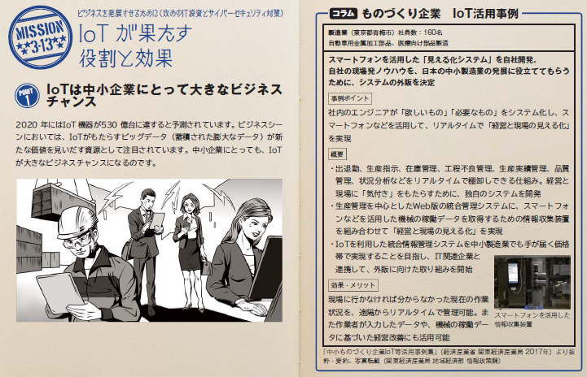
- 中小企業にとって、経費削減と人材確保は大きな課題
- 各種センサーによる自動測定や電子タグ等（RFID）を人やモノに貼り動きの情報を計測し収集することにより、リアルタイムで状況が把握できる
- その際に、センサーが誤動作したり、誤った情報を発信すると、正確な状況を把握できなくなり、業務やサービスが混乱する
- IoT、ビッグデータ、AI、ロボットは繋がっている
- ①センサー、機器、ロボットによりデータが取得され、②データのやり取りや通信により③集約されることによりビッグデータ化し、④人工知能等を用いて分析され⑤ロボット等を通じて実環境でのアクションとして実行される
- IoT、ビッグデータ、AI、ロボットを利用することにより、人が行ってきたことが効率化されるとともに、これらを使いこなすことにより、人の仕事の質を高める能力が付加価値となる
- 人工知能（AI）が果たす役割と効果

- 人工知能は、中小企業の既存の業務の人材不足の解消に留まらず、既存の人材で新たな業務を行えるようになることが期待できる。
- 不足している労働力を補完する。既存の労働力を省力化する。既存の業務効率・生産性を高める。既存の業務の提供する価値（品質や顧客満足度など）を高める。これまでに存在しなかった新しい価値をもった業務を創出する。既存の業務に取組む意欲や満足度を高める。新しい業務に取組む意欲や満足度を高めること。
- 活用する際のサイバーセキュリティ上の留意点
- 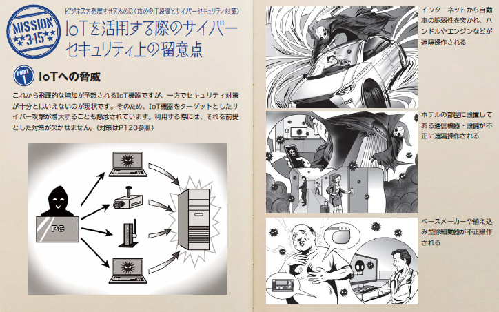
- IoT装置は、十分なセキュリティ対策がされていないものが多い。特に以前のIoT製品に関しては管理者権限パスワードの変更手順や、ファームウェアのアップデート機能はほとんど実装されていない。
- 利用者側として、IoT製品は十分なセキュリティ対策がされていないことを前提とした対策が必要
- 製造者は、IoT製品のファームウェアの自動アップデート機能を実装し、脆弱性に対して速やかに対応する等の「IoT製品ガイドライン」に沿った対応が必要
- 膨大な情報をビッグデータとして活用に当たっては、「改訂個人情報保護法」の個人情報に該当する可能性の「グレーゾーン」の情報も増える。また、利用の仕方によっては著作権侵害になるケースもある。さらに、情報をビッグデータとして公開する際に、故意・過失に関わらず、機密性の高い情報を公開してしまう可能性もある
- IoTを活用する一般利用者のためのルール

- 問合せ窓口やサポートがない機器やサービスの購入・利用を控える：インターネットに接続する機器やサービスの問合せ窓口やサポートがない場合、何か不都合が生じたとしても、適切に対処すること等が困難になる。問合せ窓口やサポートがない機器やサービスの購入・利用は行わないようにする。
- 初期設定に気をつける・機器を初めて使う際には、IDやパスワードの設定を適切に行う。パスワードの設定では、「機器購入時のパスワードのままとしない」、「他の人とパスワードを共有しない」、「他のパスワードを使い回さない」等に気をつける。・取扱説明書等の手順に従って、自分でアップデートを実施してみる。
- 使用しなくなった機器については電源を切る：使用しなくなった機器や不具合が生じた機器をインターネットに接続した状態のまま放置すると、不正利用される恐れがあることから、使用しなくなった機器は、そのまま放置せずに電源を切る。
- 機器を手放す時はデータを消す：情報が他の人に漏れることのないよう、機器を捨てる、売るなど機器を手放す時は、事前に情報を削除する。
- ITの利活用を事業戦略上に位置づけ、サイバーセキュリティを強く意識し、積極的に競争力強化に活用しようとしている企業
- デジタルトランスフォーメーション
- 最先端の技術を生かし、コスト削減だけでなく、ビジネスの推進にどう貢献するか
- DXの目指すところ
- 「ITの浸透が、人々の生活をあらゆる面でより良い方向に変化させること」
- DX時代には
- 企業がこれからのビジネスで勝ち残っていくためには、新しい製品、サービス、パートナーシップ、ビジネスモデルなどを創造し、新たな価値を創出していく必要があるという
- プラットフォームの構成
- 「クラウド」「ビッグデータ／アナリティクス」「ソーシャル技術」「モビリティ」
- プラットフォームの上にイノベーションアクセラレーター」の技術
- イノベーションを後押しするIoT、AIや機械学習などの認知システム、ロボティクス、AR（Augmented Reality、拡張現実）／VR（Virtual Reality、仮想現実）、3Dプリンティングなど
- デジタルトランスフォーメーション、インダストリー4.0、ソサエティー5.0、、、
- データを効率的に集積し、それをAIのディープラーニング機能などを活用して認識・加工し、自らの企業活動に生かしていけるかが、企業の成長の可否を決める時代がすぐそこまで来ている【日経1月4日13面 佐藤康博】
- IT化、デジタル化の進展を受入れ、それを活用して顧客との関係性強化を図る企業は、大きなビジネスチャンスを得ることが期待できる。
- 人工知能（AI）, ディープラーニング, ビッグデータ, IoT, M2M. 仮想現実（AR）, ３Dプリンタ等を活用した新サービスが、一般化する前に先駆的に取り入れるベンチャー的企業（イノベーター、アーリーアダプター）
- CtoB
- 多様な消費者ニーズに対応して、きめ細やかで丁寧なモノづくりが企業の持続的発展に不可欠な要素となる【日経1月4日13面 佐藤康博】
- 競争力強化
- 新サービス、新技術を活用した生産性の向上
- 新サービス、新技術を活用した新ビジネス展開
- 大手企業と中小企業、ベンチャー企業との協業
- 新サービス、新技術は新ビジネスのチャンスだが、セキュリティ上のリスクも大きい
- デジタルトランスフォーメーション時代の知識インフラの構築
- 概要
- 創造性、利便性の高い社会を目指して、知識の利活用の一層の推進を図るために、デジタルトランスフォーメーション時代に対応し、デジタル技術、IT技術を活用して文化資産のデジタルアーカイブシステムの構築、知識インフラの構築、更に効率的な利用環境の普及を目指す。
- ITを活用したシステムの構築・運用に際しては、サービスの機密性、完全性、可用性を損なわないための十分なセキュリティ対策に講じる。
- デジタルトランスフォーメーションとは
- 組織をデジタルの世界に移行させる変化
- 旧態依然のサービスを捨てて、テクノロジーの進展と共に常に変化し続けるビジネス・モデルを受け入れる時代
- 人やものがデジタルデータで直接繋がり、時空間の制約なく、「業種業態の枠を越えた」新たな仕組みを作り出せる時代の変化
- 形を変革、再編成により、既存の事業にない「デジタルビジネス」が登場しつつある。
- 「デジタル・トランスフォーメーション」によりサービス化、オープン化、ソーシャル化、スマート化の4つの大きな変化が生まれつつある。
- 現代のデジタルネイティブなユーザをターゲットとしたビジネスモデルやビジネスプロセスの変革
- デジタルトランスフォーメーションの効果
- 業界・業種を越えた企業が連携し、新たなビジネスやサービスを創出していく原動力となりつつある。
- グローバルビジネスの世界に新たな競争原理をもたらそうとしている。
- 中小企業において
- デジタル化の進展を受入れ、それを活用して顧客との関係性強化を図る企業にとっては、大きなビジネスチャンスが到来している。
- 柔軟にかつ大企業に先駆けて、デジタルトランスフォーメーションに対応していくことが、組織の発展につながる。
- 今まで
- これまで企業のITシステムは、業務、生産工程等を効率化して、経営を安定化させることに重きが置かれてきた。
- 単なる効率化だけではビジネスの競争に勝ち残れない
- 従来型のサービスはしばらくは継続できるかもしれないが、デジタルの未来に移行し始めなければ、もう生き残ることができない
- 現在、必要とされているのがデジタルトランスフォーメーションによる大胆かつ、スピーディーな変革が発展への道
- 今後
- 従来から業務の改善のために情報化が進められてきたが、今後はDigital Transformation時代に、如何にIT、デジタル情報を戦略的に活用できるかが問われる
- サービスの向上、サービスの継続、事業の効率化のために、デジタル化した情報をITによって利活用し、高付加価値の新たなサービスに変遷していく。
- 情報セキュリティ対策の必要性
- しかし、ITを活用してどんなに利便性の高いサービスを提供しても、どんなに業務を効率化しても、緊急事態（自然災害、大火災、感染症、テロ、セキュリティ侵害、、）が発生して、事業資産（人・もの（情報及び設備）・金）、社会的信用が失われ、早期復旧ができない場合は、事業の継続が困難になり、組織の存立さえも脅かされる可能性がある。
- どんな緊急事態が発生しても、事業を継続できるようにする対策を明示しておくことが必要
- 情報セキュリティ対策は、事業継続計画の一つ
- サービスの向上を図るために、情報資産（保有情報（媒体に依らず）、情報機器、情報システム）に対する情報セキュリティ上のリスクを低減させる
- ITを活用したサービスの構築・運用に掛かる費用は、経費ではなく先行投資。リスクに見合った情報セキュリティ対策は、サービスの構築・運用の中で実施すべき先行投資であり、緊急事態が発生した後に対処する経費として想定してはいけない
- 情報システムの構築において
- 即時性が要求されるサービスや提供するサービス内容の多様化・複雑化等に対応するために、業務手続の標準化と徹底した電子化の推進、情報セキュリティ上の要件を満たす前提での外部委託の活用、他業務業態のシステムとの連携等を検討する
- 図書館界において
- 図書館界における電子図書館事業、デジタルアーカイブ構築、出版界における電子書籍、電子雑誌サービスは、既にデジタルトランスフォーメーション時代を先取りしたものである。
- MLA機関、出版界との連携は必然で、この潮流の更なる進展から取り残されないように、知識インフラの実現形であるナショナルアーカイブサービスを構築し、新たな知識や事業を創出するための情報を提供していく必要がある。
- デジタルトランスフォーメーションに向けたスキル変革の方向性（検討用）
- No.1
- 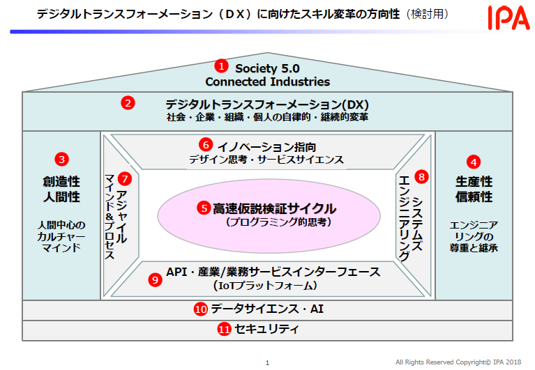
- デジタルトランスフォーメーション（ＤＸ）のスキル変革の方向性を、「家の構造（屋根と梁、柱、土台）」をモチーフに整理
- No.２
- 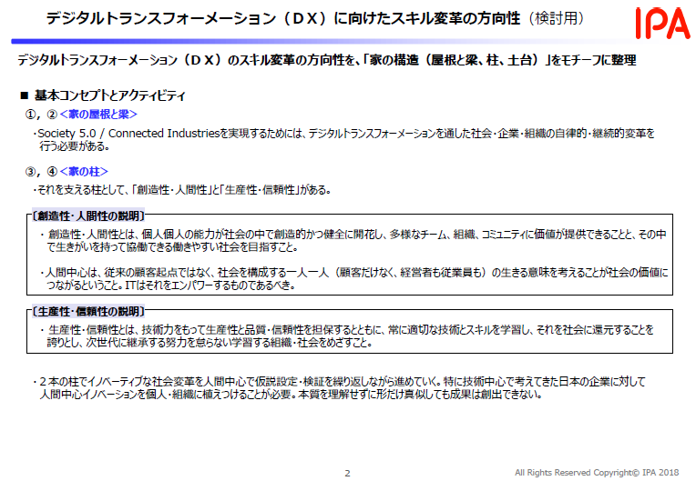
- 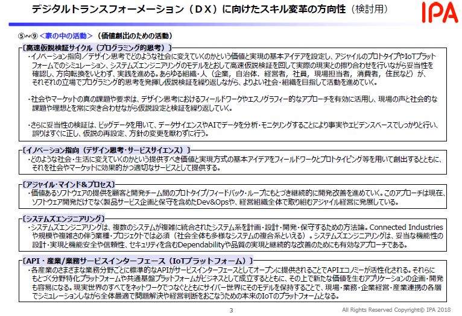

- ■ 基本コンセプトとアクティビティ
- ③，④＜家の柱＞
- ・それを支える柱として、「創造性・人間性」と「生産性・信頼性」がある。
- 〔創造性・人間性の説明〕
- ・ 創造性・人間性とは、個人個人の能力が社会の中で創造的かつ健全に開花し、多様なチーム、組織、コミュニティに価値が提供できることと、その中で生きがいを持って協働できる働きやすい社会を目指すこと。
- ・人間中心は、従来の顧客起点ではなく、社会を構成する一人一人（顧客だけなく、経営者も従業員も）の生きる意味を考えることが社会の価値につながるということ。ITはそれをエンパワーするものであるべき。
- 〔生産性・信頼性の説明〕
- ・ 生産性・信頼性とは、技術力をもって生産性と品質・信頼性を担保するとともに、常に適切な技術とスキルを学習し、それを社会に還元することを誇りとし、次世代に継承する努力を怠らない学習する組織・社会をめざすこと。
- ・２本の柱でイノベーティブな社会変革を人間中心で仮説設定・検証を繰り返しながら進めていく。特に技術中心で考えてきた日本の企業に対して人間中心イノベーションを個人・組織に植えつけることが必要。本質を理解せずに形だけ真似しても成果は創出できない。
- ⑤~⑨＜家の中の活動＞（価値創出のための活動）
- 〔高速仮説検証サイクル（プログラミング的思考）〕
- ・イノベーション指向／デザイン思考でどのような社会に変えていくのかという価値と実現の基本アイデアを設定し、アジャイルのプロトタイプやIoTプラット
- フォームでのシミュレーション、システムズエンジニアリングのモデルをとおして高速仮説検証を回して実際の現実との擦り合わせを行いながら妥当性を確認し、方向転換をいとわず、実践を進める。あらゆる組織・人（企業，自治体．経営者，社員，現場担当者，消費者，住民など）が、それぞれの立場でプログラミング的思考を発揮し仮説検証を繰り返しながら、よりよい社会・組織を目指して活動を進めていく。
- ・社会やマーケットの真の課題や要求は、デザイン思考におけるフィールドワークやエスノグラフィー的なアプローチを有効に活用し、現場の声と社会的な課題や理想とを常に突き合わせながら仮説設定と検証を繰り返していく。
- ・さらに妥当性の検証は、ビッグデータを用いて、データサイエンスやAIでデータを分析・モニタリングすることにより事実やエビデンスベースでしっかりと行い、誤りはすぐに正し、仮説の再設定、方針の変更を厭わずに行う。
- 〔イノベーション指向（デザイン思考・サービスサイエンス）〕
- ・どのような社会・生活に変えていくのかという提供すべき価値と実現方式の基本アイデアをフィールドワークとプロトタイピング等を用いて創出するとともに、それを社会やマーケットに効果的かつ適切なサービスとして提供する。
- 〔アジャイル・マインド＆プロセス〕
- ・価値あるソフトウェアの提供を顧客と開発チーム間のプロトタイプ/フィードバック・ループにもとづき継続的に開発改善を進めていく。このアプローチは現在、
- ソフトウェア開発だけでなく製品サービス企画と保守を含めたDev&Opsや、経営組織全体で取り組むアジャイル経営に発展している。
- 〔システムズエンジニアリング〕
- ・システムズエンジニアリングは、複数のシステムが複雑に統合されたシステム系を計画・設計・開発・保守するための方法論。Connected Industriesや規模や複雑さの伴う業種・プロジェクトでは必須（社会全体も多様なシステムの複合系といえる）。システムズエンジニアリングは、妥当な機能性の設計・実現と機能安全や信頼性、セキュリティを含むDependabilityや品質の実現と継続的な改善のためにも有効なアプローチである。
- 〔API・産業/業務サービスインターフェース（IoTプラットフォーム）〕
- ・各産業のさまざまな業務分野ごとに標準的なAPIがサービスインターフェースとしてオープンに提供されることでAPIエコノミーが活性化される。それらにもとづく分野特化プラットフォームや共通基盤プラットフォームがビジネスとして成立するとともに、その上で新たな価値を生むアプリケーションの企画・開発も容易になる。現実世界のすべてをネットワークでつなぐとともにサイバー世界にそのモデルを保持することで、現場・業務・企業経営・産業連携の各層でシミュレーションしながら全体最適で問題解決や経営判断をおこなうための本来のIoTのプラットフォームとなる。
- ⑩，⑪＜土台＞（活動のベースとなるもの）
- 〔データサイエンス・AI〕
- ・第４次産業革命には、デバイスから経営まで各レイヤーに渡ってデータサイエンス的なアプローチが必要であるのでベース（土台）にある。
- ・データには、IoTデバイスに対する低レベルなものから、特定現場機能、特定業務機能、業務プロセス、マーケティングデータ、経営情報の各層で必要なデータレベルがある。それらのデータを機械学習や人工知能（AI）等の技術を用いてビジネスに利活用する。
- 〔セキュリティ〕
- ・セキュリティも基盤として必要であるので同じくベースにある。
- ・セキュリティにもデータの暗号化などの低レベルなものから高レベルなものまである。
- デジタルフォーメーションに 必要な技術と人材
- １．はじめに
- 様々な情報が活用される社会
- 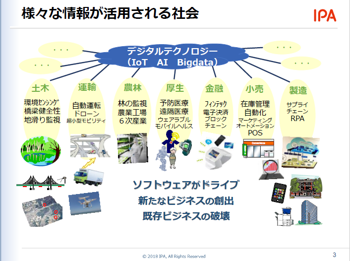
- デジタルトランスフォーメーション（DX）とは何か
- 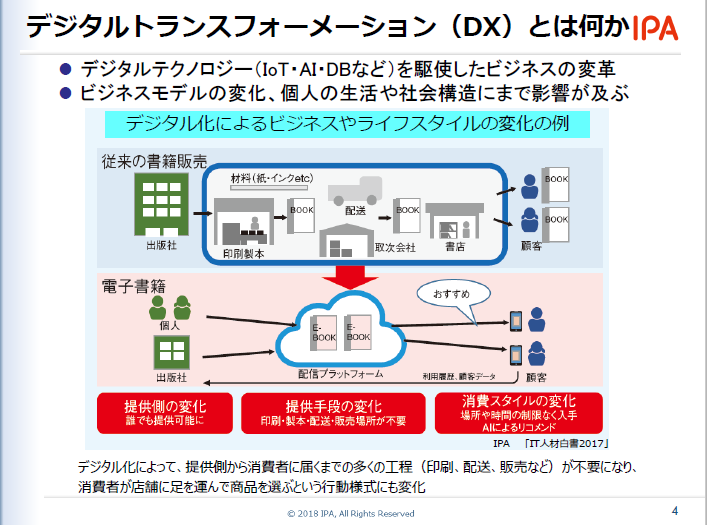
- デジタルテクノロジー（IoT・AI・DBなど）を駆使したビジネスの変革
- ・ビジネスモデルの変化、個人の生活や社会構造にまで影響が及ぶ
- 日本の現状：DXの遅れ
- 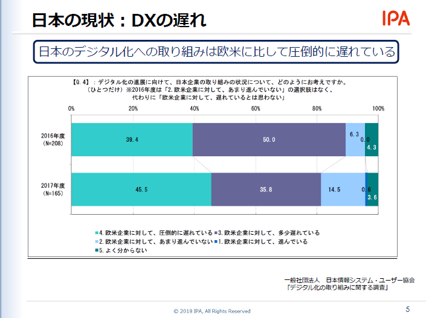
- 日本のデジタル化へ取り組みは欧米に比して圧倒的遅れている
- AIは米国、中国がリード
- 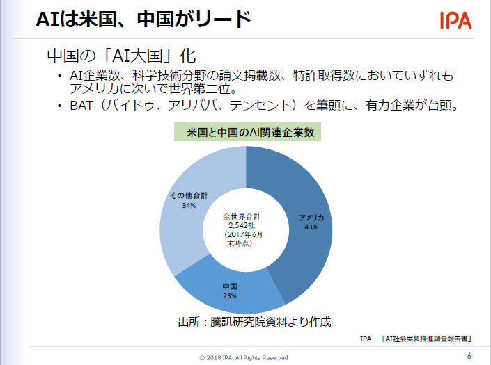
- 中国の「AI大国」化
- ・AI企業数、科学技術分野の論文掲載数、特許取得数においていずれもアメリカに次いで世界第二位。
- ・BAT（バイドゥ、アリババ、テンセント）を筆頭に、有力企業が台頭。
- 課題先進国日本とDX
- 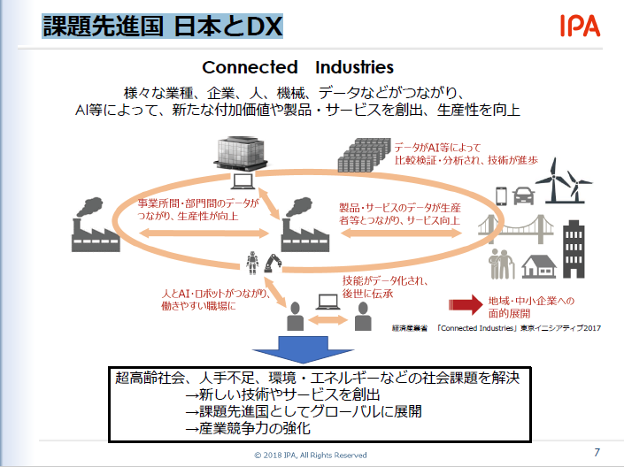
- Connected Industries
- 様々な業種、企業、人、機械、データなどがつながり、AI等によって、新たな付加価値や製品・サービスを創出、生産性を向上
- ２．組込み産業を取り巻く環境、技術、人材
- 組込みソフトウェア産業の事業環境の変化
- 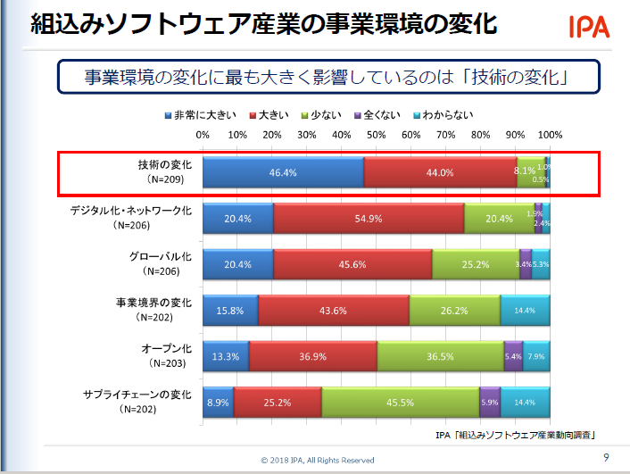
- 事業環境の変化に最も大きく影響しているは「技術の変化」
- 組込みソフトウェアの複雑化の傾向
- 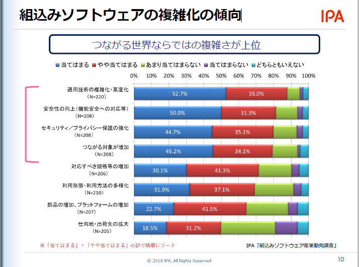
- つながる世界ならではの複雑さが上位
- 組込みソフトウェアの複雑化傾向への対応方針
- 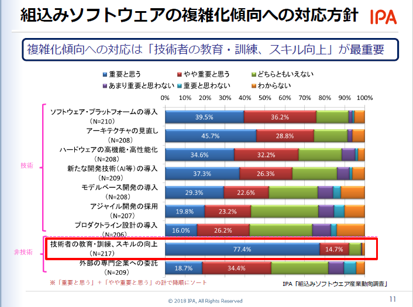
- 複雑化傾向への対応は「技術者の教育・訓練、スキル向上」が最重要
- 今、重要な技術、今後強化／獲得したい技術
- 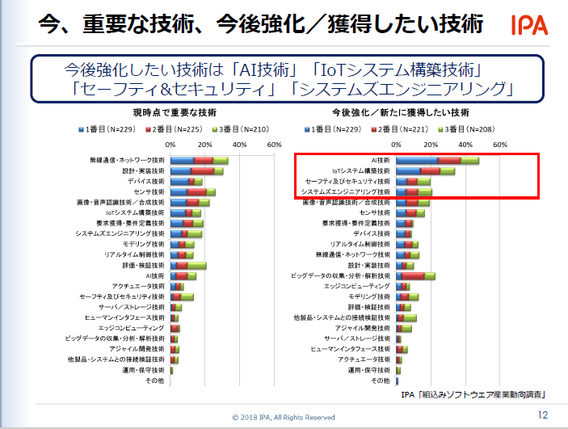
- 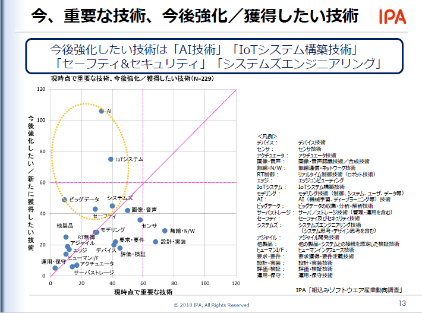
- 今後強化したい技術は「AI技術」「IoTシステム構築技術」「セーフティ&セキュリティ」 「シスムズエンジニアリング」

- 重要度の伸びは、「ビッグデータの収集・分析・解析」技術
- 現在不足している／今後不足が予想される人材
- 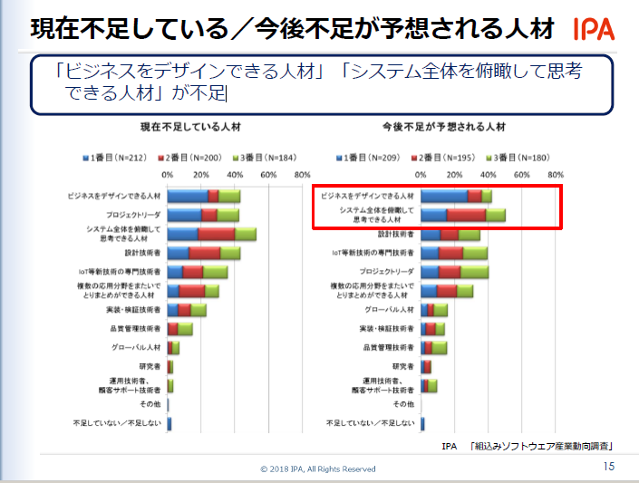
- 「ビジネスをデザインできる人材」「システム全体を俯瞰して思考できる人材」が不足
- 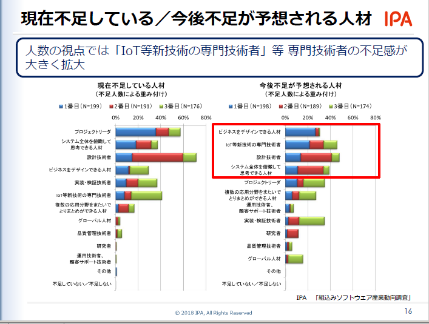
- 人数の視点では「IoT等新技術の専門技術者」等専門技術者の不足感が大きく拡大
- 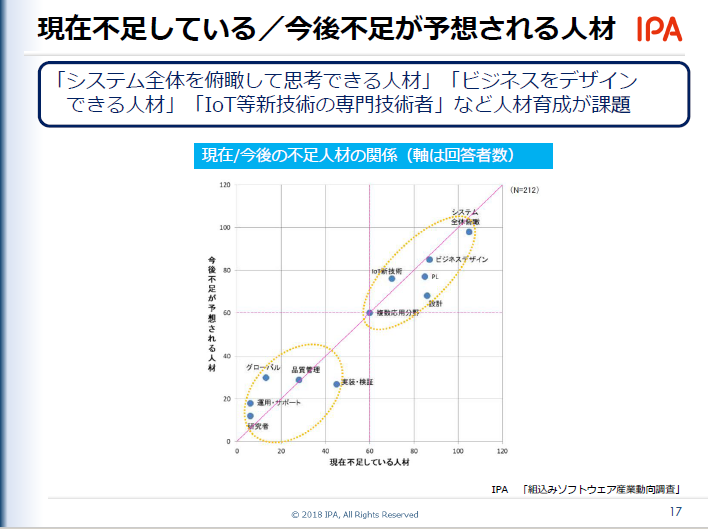
- 「システム全体を俯瞰して思考できる人材」「ビジネスをデザインできる人材」「IoT等新技術の専門技術者」など人材育成が課題
- ３．デジタルトランスフォーメーションに必要な技術、必要な人材
- DXとシステム環境の変化
- つながる世界の新たなビジネス環境
- 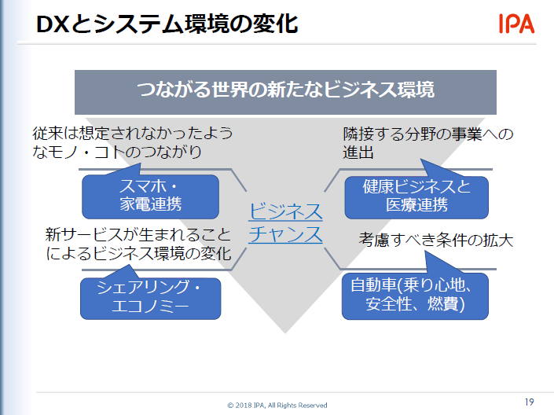
- ビジネスチャンスの裏には経営リスクも
- 俯瞰的に物事を捉えるためには武器（新たなアプローチ）が必要
- 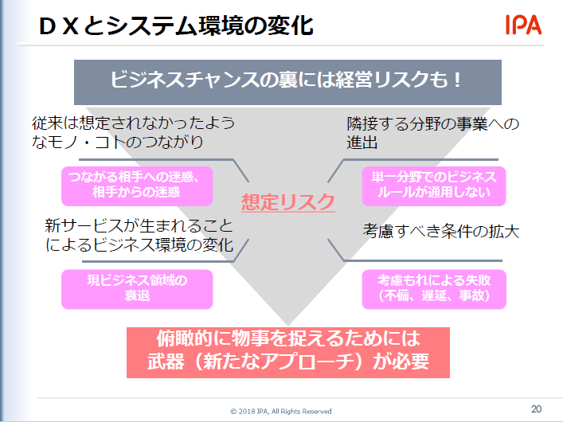
- 新たなアプローチ：システムズエンジニアリング
- 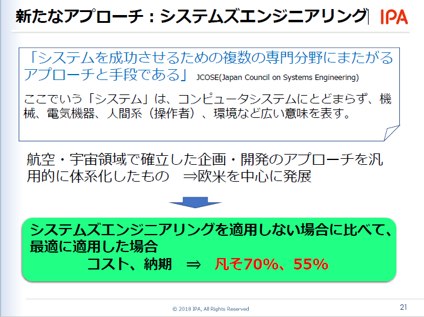
- 「システムを成功させるための複数の専門分野にまたがるアプローチと手段である」
- 航空・宇宙領域で確立した企画・開発のアプローチを汎用的に体系化したもの⇒欧米を中心に発展
- つながる世界のさまざまな課題
- 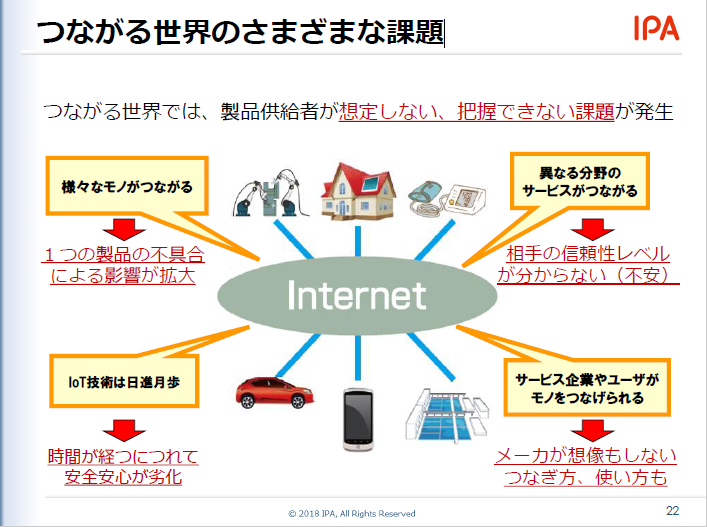
- つながる世界では、製品供給者が想定しない、把握できない課題が発生
- つながる世界で求められる品質
- 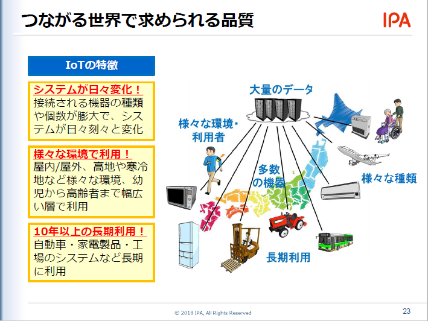
- IoTの特徴
- システムが日々変化！
接続される機器の種類や個数が膨大で、システムが日々刻々と変化 - 様々な環境で利用！
屋内/屋外、高地や寒冷地など様々な環境、幼児から高齢者まで幅広い層で利用 - 10年以上の長期利用！
自動車・家電製品・工場のシステムなど長期に利用
- IoT高信頼化・品質確保に向けて「つながる世界の開発指針」の展開
- 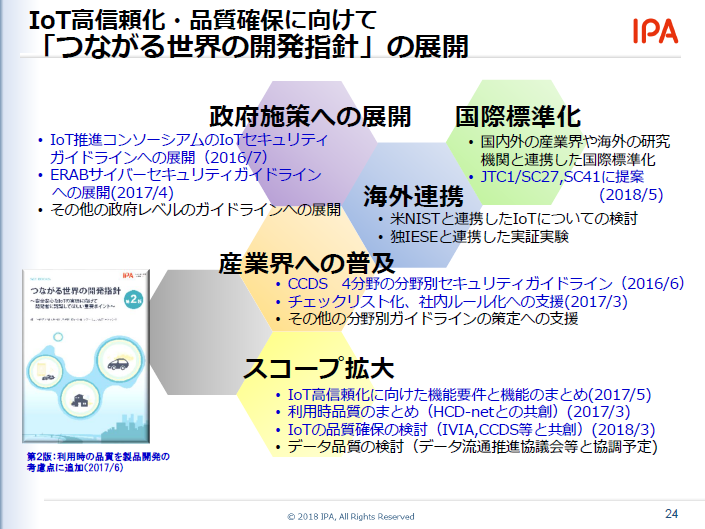
- 政府施策への展開
- • IoT推進コンソーシアムのIoTセキュリティガイドラインへの展開（2016/7）
- • ERABサイバーセキュリティガイドラインへの展開(2017/4)
- • その他の政府レベルのガイドラインへの展開
- 国際標準化
- • 国内外の産業界や海外の研究機関と連携した国際標準化
- • JTC1/SC27,SC41に提案(2018/5)
- 海外連携
- • 米NISTと連携したIoTについての検討
- • 独IESEと連携した実証実験
- 産業界への普及
- • CCDS 4分野の分野別セキュリティガイドライン（2016/6）
- • チェックリスト化、社内ルール化への支援(2017/3)
- • その他の分野別ガイドラインの策定への支援
- スコープ拡大
- • IoT高信頼化に向けた機能要件と機能のまとめ(2017/5)
- • 利用時品質のまとめ（HCD-netとの共創）(2017/3)
- • IoTの品質確保の検討（IVIA,CCDS等と共創）(2018/3)
- • データ品質の検討（データ流通推進協議会等と協調予定)
- 必要となる人材スキル：「ITSS+（プラス）」
- 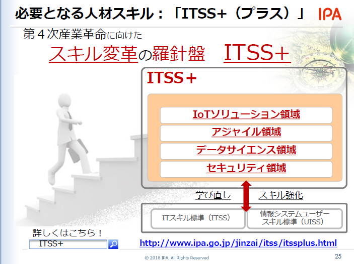
- 地域の課題解決と新ビジネス創出
- 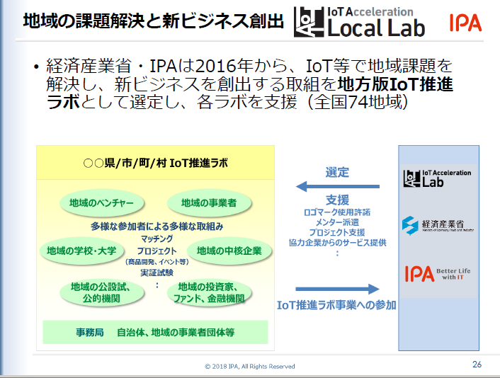
- 経済産業省・IPAは2016年から、IoT等で地域課題を解決し、新ビジネスを創出する取組を地方版IoT推進ラボとして選定し、各ラボを支援（全国74地域）
- ラボが取り組む様々なテーマ
- 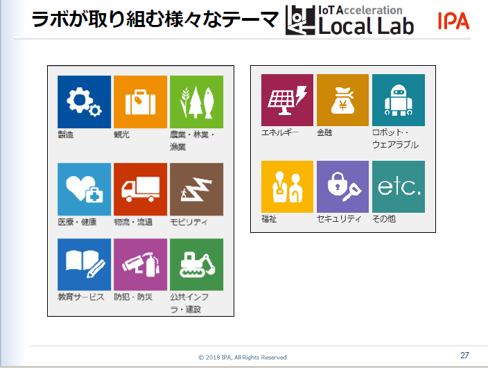
- 大阪市IoT推進ラボ
- 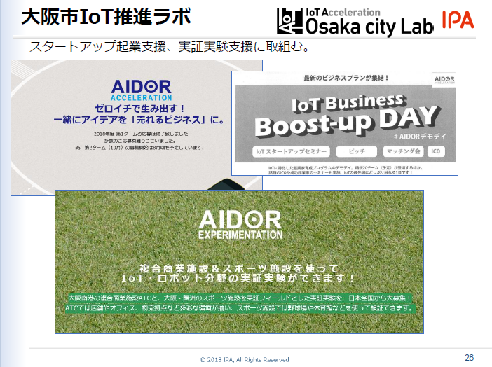
- 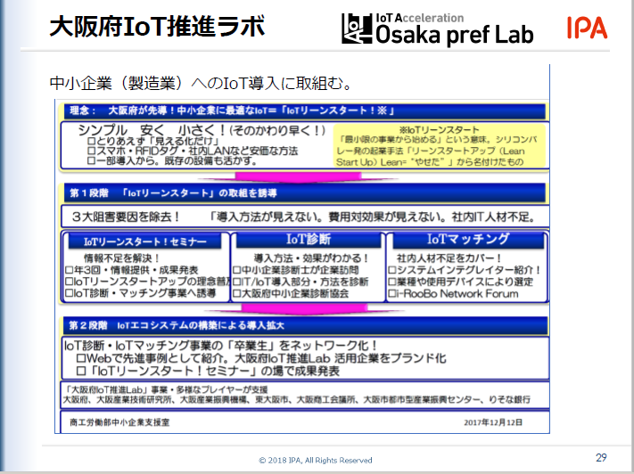
- 札幌市IoTイノベーション推進コンソーシアム
- 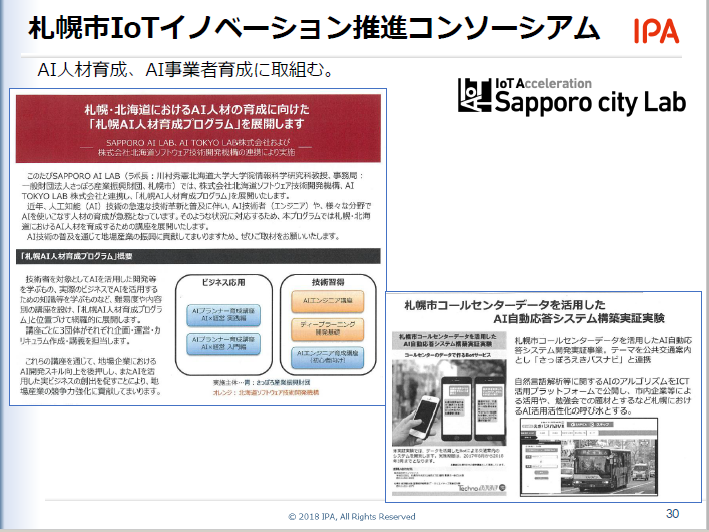
- ４．社会変革に向けた新たな潮流の把握と発信
- 社会変革に向けた新たな潮流の把握と発信
- 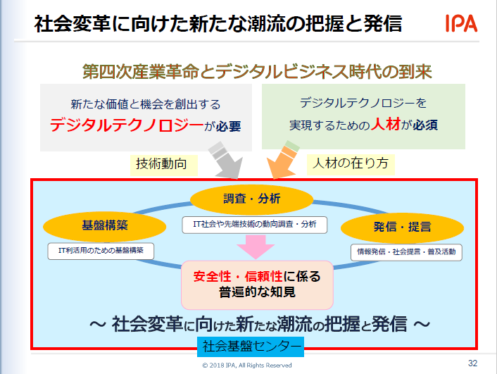
- DXレポート～ITシステム「2025年の崖」の克服とDXの本格的な展開～（サマリー）
- 2025年の崖
- 多くの経営者が、将来の成長、競争力強化のために、新たなデジタル技術を活用して新たなビジネス・モデルを創出・柔軟に改変するデジタル・トランスフォーメーション（＝DX）の必要性について理解しているが・・・
・既存システムが、事業部門ごとに構築されて、全社横断的なデータ活用ができなかったり、過剰なカスタマイズがなされているなどにより、複雑化・ブラックボックス化
・経営者がDXを望んでも、データ活用のために上記のような既存システムの問題を解決し、そのためには業務自体の見直しも求められる中（＝経営改革そのもの）、現場サイドの抵抗も大きく、いかにこれを実行するかが課題となっている
→ この課題を克服できない場合、DXが実現できないのみでなく、2025年以降、最大１２兆円／年（現在の約３倍）の経済損失が生じる可能性（2025年の崖）。 - 放置シナリオ
- ユーザ：
- ・爆発的に増加するデータを活用しきれず、デジタル競争の敗者に
・多くの技術的負債を抱え、業務基盤そのものの維持・継承が困難に
・サイバーセキュリティや事故・災害によるシステムトラブルやデータ滅失・流出等のリスクの高まり
- ベンダー：
- ・技術的負債の保守・運用にリソースを割かざるを得ず、最先端のデジタル技術を担
う人材を確保できず
・レガシーシステムサポートに伴う人月商売の受託型業務から脱却できない
・クラウドベースのサービス開発・提供という世界の主戦場を攻めあぐねる状態に
- DX実現シナリオ
- 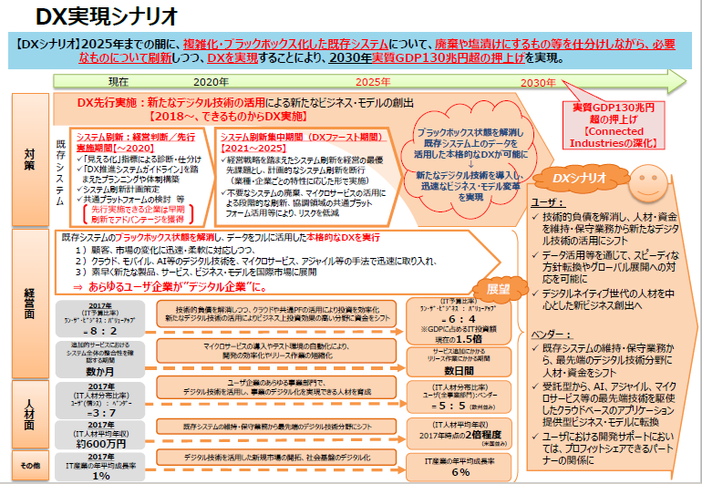
- 【DXシナリオ】2025年までの間に、複雑化・ブラックボックス化した既存システムについて、廃棄や塩漬けにするもの等を仕分けしながら、必要なものについて刷新しつつ、DXを実現することにより、2030年実質GDP130兆円超の押上げを実現。
- DXの推進に向けた対応策について
- 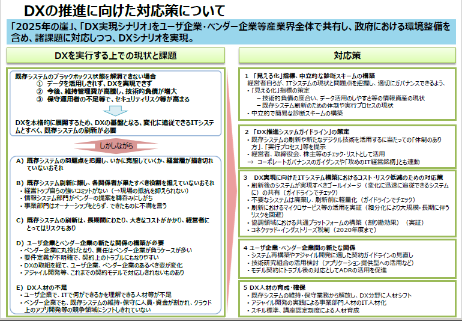
- 「2025年の崖」、「DX実現シナリオ」をユーザ企業・ベンダー企業等産業界全体で共有し、政府における環境整備を含め、諸課題に対応しつつ、DXシナリオを実現。
- DXを実行する上での現状と課題
- 既存システムのブラックボックス状態を解消できない場合
- ①データを活用しきれず、DXを実現できず
- ②今後、維持管理費が高騰し、技術的負債が増大
- ③保守運用者の不足等で、セキュリティリスク等が高まる
- DXを本格的に展開するため、DXの基盤となる、変化に追従できるITシステムとすべく、既存システムの刷新が必要
- しかしながら
- A)既存システムの問題点を把握し、いかに克服していくか、経営層が描き切れていないおそれ
- B)既存システム刷新に際し、各関係者が果たすべき役割を担えていないおそれ
- ・経営トップ自らの強いコミットがない（→現場の抵抗を抑えられない）
- ・情報システム部門がベンダーの提案を鵜呑みにしがち
- ・事業部門はオーナーシップをとらず、できたものに不満を言う
- C)既存システムの刷新は、長期間にわたり、大きなコストがかかり、経営者にとってはリスクもあり
- D)ユーザ企業とベンダー企業の新たな関係の構築が必要
- ・ベンダー企業に丸投げとなり、責任はベンダー企業が負うケースが多い
- ・要件定義が不明確で、契約上のトラブルにもなりやすい
- ・DXの取組を経て、ユーザ企業、ベンダー企業のあるべき姿が変化
- ・アジャイル開発等、これまでの契約モデルで対応しきれないものあり
- E)DX人材の不足
- ・ユーザ企業で、ITで何ができるかを理解できる人材等が不足
- ・ベンダー企業でも、既存システムの維持・保守に人員・資金が割かれ、クラウド上のアプリ開発等の競争領域にシフトしきれていない
- 対応策
- １.「見える化」指標、中立的な診断スキームの構築
- 経営者自らが、ITシステムの現状と問題点を把握し、適切にガバナンスできるよう、
- ・「見える化」指標の策定
- －技術的負債の度合い、データ活用のしやすさ等の情報資産の現状
- －既存システム刷新のための体制や実行プロセスの現状
- ・中立的で簡易な診断スキームの構築
- ２.「DX推進システムガイドライン」の策定
- ・既存システムの刷新や新たなデジタル技術を活用するに当たっての「体制のあり方」、「実行プロセス」等を提示
- ・経営者、取締役会、株主等のチェック・リストとして活用
- →コーポレートガバナンスのガイダンスや「攻めのIT経営銘柄」とも連動
- 3.DX実現に向けたITシステム構築におけるコスト・リスク低減のための対応策
- ・刷新後のシステムが実現すべきゴールイメージ（変化に迅速に追従できるシステムに）の共有（ガイドラインでチェック）
- ・不要なシステムは廃棄し、刷新前に軽量化（ガイドラインでチェック）
- ・刷新におけるマイクロサービス等の活用を実証（細分化により大規模・長期に伴うリスクを回避）
- ・協調領域における共通プラットフォームの構築（割り勘効果）（実証）
- ・コネクテッド・インダストリーズ税制（2020年度まで）
- 4.ユーザ企業・ベンダー企業間の新たな関係
- ・システム再構築やアジャイル開発に適した契約ガイドラインの見直し
- ・技術研究組合の活用検討（アプリケーション提供型への活用など）
- ・モデル契約にトラブル後の対応としてADRの活用を促進
- 5.DX人材の育成・確保
- ・既存システムの維持・保守業務から解放し、DX分野に人材シフト
- ・アジャイル開発の実践による事業部門人材のIT人材化
- ・スキル標準、講座認定制度による人材育成
- （参考）レガシーシステムが存在することによるリスク・課題
- 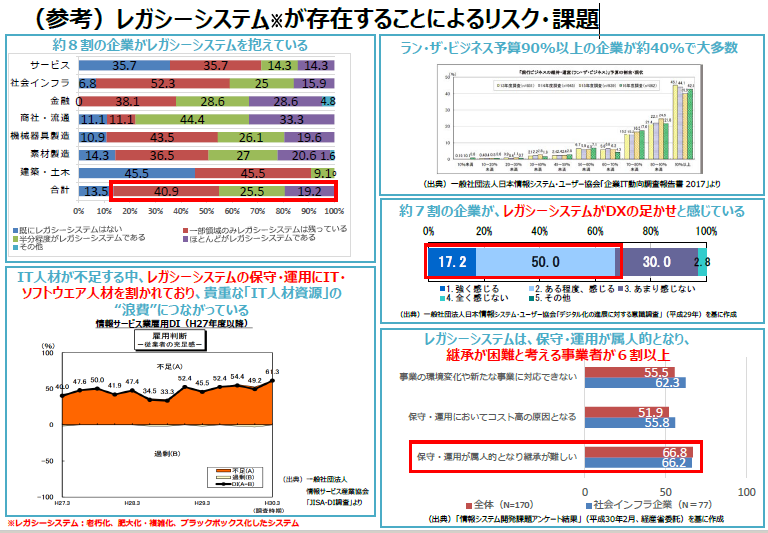
- DXレポート～ITシステム「2025年の崖」の克服とDXの本格的な展開～（簡易版）
- 1. 検討の背景と議論のスコープ
- 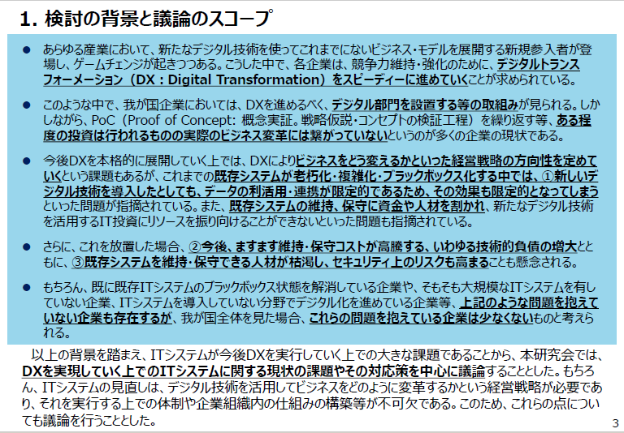
- ・あらゆる産業において、新たなデジタル技術を使ってこれまでにないビジネス・モデルを展開する新規参入者が登場し、ゲームチェンジが起きつつある。こうした中で、各企業は、競争力維持・強化のために、デジタルトランスフォーメーション（DX：Digital Transformation）をスピーディーに進めていくことが求められている。
- ・このような中で、我が国企業においては、DXを進めるべく、デジタル部門を設置する等の取組みが見られる。しかしながら、PoC（Proof of Concept: 概念実証。戦略仮説・コンセプトの検証工程）を繰り返す等、ある程度の投資は行われるものの実際のビジネス変革には繋がっていないというのが多くの企業の現状である。
- ・今後DXを本格的に展開していく上では、DXによりビジネスをどう変えるかといった経営戦略の方向性を定めていくという課題もあるが、これまでの既存システムが老朽化・複雑化・ブラックボックス化する中では、➀新しいデジタル技術を導入したとしても、データの利活用・連携が限定的であるため、その効果も限定的となってしまうといった問題が指摘されている。また、既存システムの維持、保守に資金や人材を割かれ、新たなデジタル技術を活用するIT投資にリソースを振り向けることができないといった問題も指摘されている。
- ・さらに、これを放置した場合、➁今後、ますます維持・保守コストが高騰する、いわゆる技術的負債の増大とともに、➂既存システムを維持・保守できる人材が枯渇し、セキュリティ上のリスクも高まることも懸念される。
- ・もちろん、既に既存ITシステムのブラックボックス状態を解消している企業や、そもそも大規模なITシステムを有していない企業、ITシステムを導入していない分野でデジタル化を進めている企業等、上記のような問題を抱えていない企業も存在するが、我が国全体を見た場合、これらの問題を抱えている企業は少なくないものと考えられる。
- 【参考】DXの定義
- 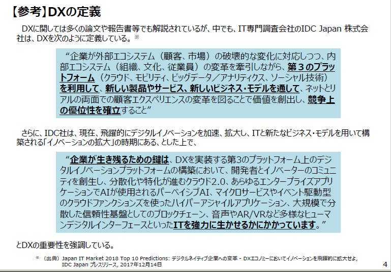
- “企業が外部エコシステム（顧客、市場）の破壊的な変化に対応しつつ、内部エコシステム（組織、文化、従業員）の変革を牽引しながら、第３のプラットフォーム（クラウド、モビリティ、ビッグデータ／アナリティクス、ソーシャル技術）を利用して、新しい製品やサービス、新しいビジネス・モデルを通して、ネットとリアルの両面での顧客エクスペリエンスの変革を図ることで価値を創出し、競争上の優位性を確立すること”
- “企業が生き残るための鍵は、DXを実装する第3のプラットフォーム上のデジタルイノベーションプラットフォームの構築において、開発者とイノベーターのコミュニティを創生し、分散化や特化が進むクラウド2.0、あらゆるエンタープライズアプリケーションでAIが使用されるパーベイシブAI、マイクロサービスやイベント駆動型のクラウドファンクションズを使ったハイパーアジャイルアプリケーション、大規模で分散した信頼性基盤としてのブロックチェーン、音声やAR/VRなど多様なヒューマンデジタルインターフェースといったITを強力に生かせるかにかかっています。”
- 2. DXの推進に関する現状と課題
- 2.1 DXを実行する上での経営戦略における現状と課題
- 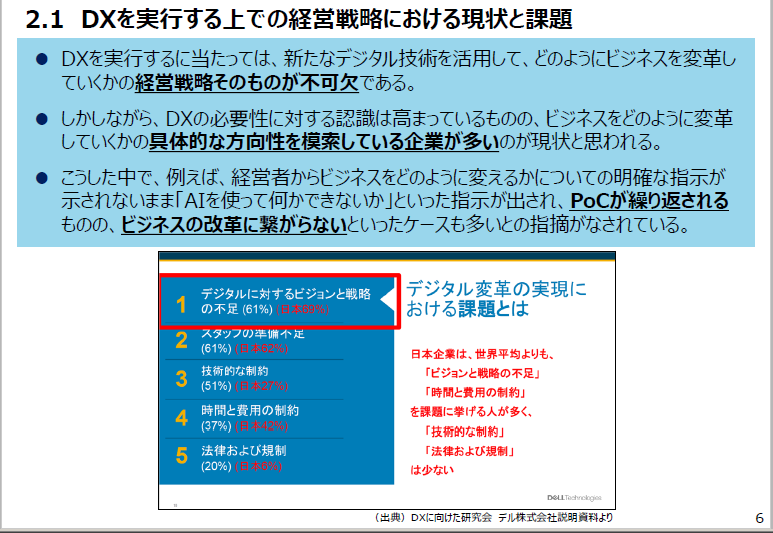
- ・DXを実行するに当たっては、新たなデジタル技術を活用して、どのようにビジネスを変革していくかの経営戦略そのものが不可欠である。
- ・しかしながら、DXの必要性に対する認識は高まっているものの、ビジネスをどのように変革していくかの具体的な方向性を模索している企業が多いのが現状と思われる。
- ・こうした中で、例えば、経営者からビジネスをどのように変えるかについての明確な指示が示されないまま「AIを使って何かできないか」といった指示が出され、PoCが繰り返されるものの、ビジネスの改革に繋がらないといったケースも多いとの指摘がなされている。
- 2.2 既存システムの現状と課題
- 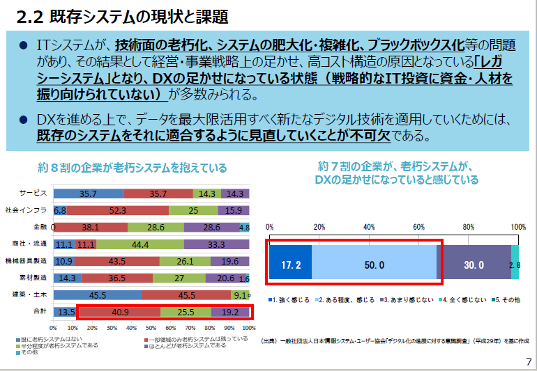
- ・ITシステムが、技術面の老朽化、システムの肥大化・複雑化、ブラックボックス化等の問題があり、その結果として経営・事業戦略上の足かせ、高コスト構造の原因となっている「レガシーシステム」となり、DXの足かせになっている状態（戦略的なIT投資に資金・人材を振り向けられていない）が多数みられる。
- ・DXを進める上で、データを最大限活用すべく新たなデジタル技術を適用していくためには、既存のシステムをそれに適合するように見直していくことが不可欠である。
- 【参考】既存システムがDXの足かせとなっている理由
- 2.2.2既存システムの問題点

- 【「レガシーシステム問題」の本質（仮説）】システムのブラックボックス化がレガシー問題の本質
- 問題の本質1）「自社システムの中身が、ブラックボックスになってしまった」
- 問題の本質2）「不十分なマネジメントが、再びブラックボックスを引き起こす」
- 2.2.3既存システムの問題点の背景
- 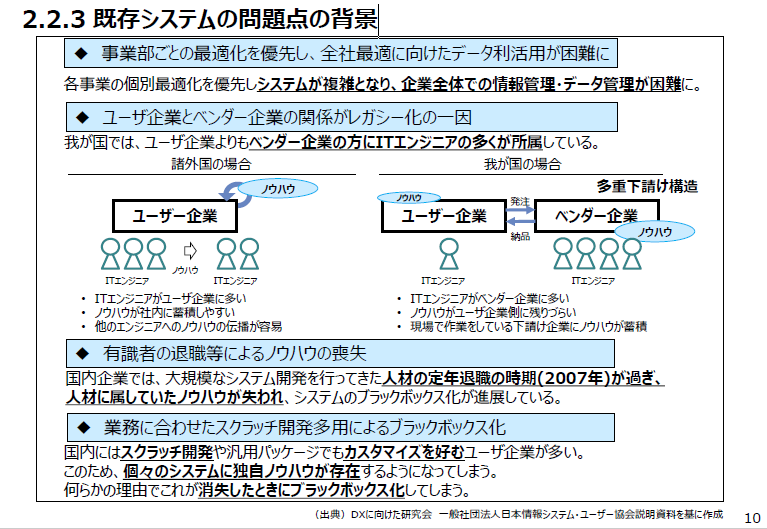
- ◆事業部ごとの最適化を優先し、全社最適に向けたデータ利活用が困難に
- 各事業の個別最適化を優先しシステムが複雑となり、企業全体での情報管理・データ管理が困難に。
- ◆ユーザ企業とベンダー企業の関係がレガシー化の一因
- 我が国では、ユーザ企業よりもベンダー企業の方にITエンジニアの多くが所属している。◆有識者の退職等によるノウハウの喪失
- 国内企業では、大規模なシステム開発を行ってきた人材の定年退職の時期(2007年)が過ぎ、人材に属していたノウハウが失われ、システムのブラックボックス化が進展している。◆業務に合わせたスクラッチ開発多用によるブラックボックス化
- 国内にはスクラッチ開発や汎用パッケージでもカスタマイズを好むユーザ企業が多い。
- このため、個々のシステムに独自ノウハウが存在するようになってしまう。何らかの理由でこれが消失したときにブラックボックス化してしまう。
- 2.2.4既存システムの問題の難解さ
- 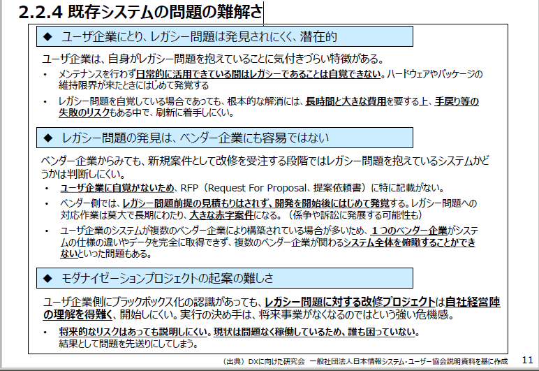
- ◆ユーザ企業にとり、レガシー問題は発見されにくく、潜在的
- ユーザ企業は、自身がレガシー問題を抱えていることに気付きづらい特徴がある。
- ・メンテナンスを行わず日常的に活用できている間はレガシーであることは自覚できない。ハードウェアやパッケージの維持限界が来たときにはじめて発覚する
- ・レガシー問題を自覚している場合であっても、根本的な解消には、長時間と大きな費用を要する上、手戻り等の失敗のリスクもある中で、刷新に着手しにくい。
- ◆レガシー問題の発見は、ベンダー企業にも容易ではない
- ベンダー企業からみても、新規案件として改修を受注する段階ではレガシー問題を抱えているシステムかどうかは判断しにくい。
- ・ユーザ企業に自覚がないため、RFP（Request For Proposal、提案依頼書）に特に記載がない。
- ・ベンダー側では、レガシー問題前提の見積もりはされず、開発を開始後にはじめて発覚する。レガシー問題への対応作業は莫大で長期にわたり、大きな赤字案件になる。（係争や訴訟に発展する可能性も）
- ・ユーザ企業のシステムが複数のベンダー企業により構築されている場合が多いため、１つのベンダー企業がシステムの仕様の違いやデータを完全に取得できず、複数のベンダー企業が関わるシステム全体を俯瞰することができないといった問題もある。
- ◆モダナイゼーションプロジェクトの起案の難しさ
- ユーザ企業側にブラックボックス化の認識があっても、レガシー問題に対する改修プロジェクトは自社経営陣の理解を得難く、開始しにくい。実行の決め手は、将来事業がなくなるのではという強い危機感。
- ・将来的なリスクはあっても説明しにくい。現状は問題なく稼働しているため、誰も困っていない。結果として問題を先送りにしてしまう。
- 2.2.5既存システムの運用・保守に割かれてしまう資金・人材
- 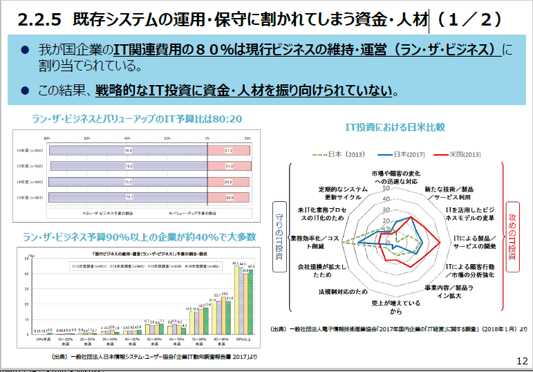
- ・我が国企業のIT関連費用の８０％は現行ビジネスの維持・運営（ラン・ザ・ビジネス）に割り当てられている。
- ・この結果、戦略的なIT投資に資金・人材を振り向けられていない。
- 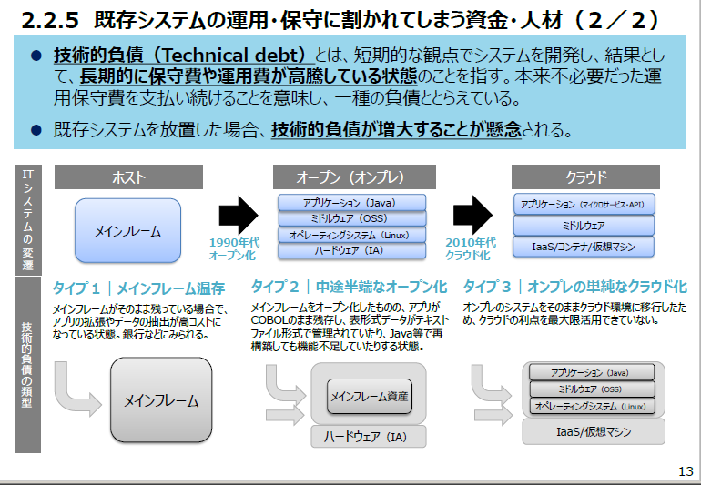
- ・技術的負債（Technical debt）とは、短期的な観点でシステムを開発し、結果として、長期的に保守費や運用費が高騰している状態のことを指す。本来不必要だった運用保守費を支払い続けることを意味し、一種の負債ととらえている。
- ・既存システムを放置した場合、技術的負債が増大することが懸念される。
- 2.3 ユーザ企業における経営層・各部門・人材等の課題
- 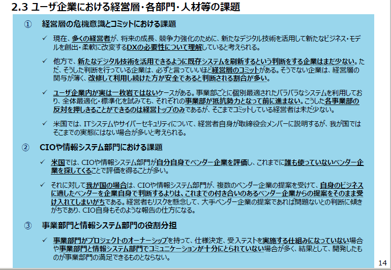
- 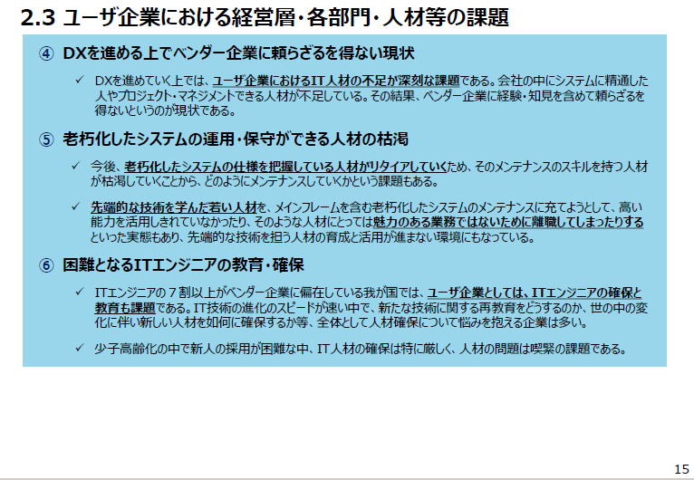
- ①経営層の危機意識とコミットにおける課題
- ・現在、多くの経営者が、将来の成長、競争力強化のために、新たなデジタル技術を活用して新たなビジネス・モデルを創出・柔軟に改変するDXの必要性について理解していると考えられる。
- ・他方で、新たなデジタル技術を活用できるように既存システムを刷新するという判断をする企業はまだ少ない。ただ、そうした判断を行っている企業は、必ずと言っていいほど経営層のコミットがある。そうでない企業は、経営層の関与が薄く、改修して利用し続けた方が安全であると判断される割合が多い。
- ・ユーザ企業内が実は一枚岩ではないケースがある。事業部ごとに個別最適されたバラバラなシステムを利用しており、全体最適化・標準化を試みても、それぞれの事業部が抵抗勢力となって前に進まない。こうした各事業部の反対を押しきることができるのは経営トップのみであるが、そこまでコミットしている経営者は未だ少ない。
- ・米国では、ITシステムやサイバーセキュリティについて、経営者自身が取締役会メンバーに説明するが、我が国ではそこまでの実態にはない場合が多いと考えられる。
- ②CIOや情報システム部門における課題
- ・米国では、CIOや情報システム部門が自分自身でベンダー企業を評価し、これまでに誰も使っていないベンダー企業を探してくることで評価を得ることが多い。
- ・それに対して我が国の場合は、CIOや情報システム部門が、複数のベンダー企業の提案を受けて、自身のビジネスに適したベンダーを企業自身で判断するよりは、これまでの付き合いのあるベンダー企業からの提案をそのまま受け入れてしまいがちである。経営者もリスクを懸念して、大手ベンダー企業の提案であれば問題ないとの判断に傾きがちであり、CIO自身もそのような報告の仕方になる。
- ③事業部門と情報システム部門の役割分担
- ・事業部門がプロジェクトのオーナーシップを持って、仕様決定、受入テストを実施する仕組みになっていない場合や事業部門と情報システム部門でコミュニケーションが十分にとられていない場合が多く、結果として、開発したものが事業部門の満足できるものとならない。
- ④DXを進める上でベンダー企業に頼らざるを得ない現状
- ・DXを進めていく上では、ユーザ企業におけるIT人材の不足が深刻な課題である。会社の中にシステムに精通した人やプロジェクト・マネジメントできる人材が不足している。その結果、ベンダー企業に経験・知見を含めて頼らざるを得ないというのが現状である。
- ⑤老朽化したシステムの運用・保守ができる人材の枯渇
- ・今後、老朽化したシステムの仕様を把握している人材がリタイアしていくため、そのメンテナンスのスキルを持つ人材が枯渇していくことから、どのようにメンテナンスしていくかという課題もある。
- ・先端的な技術を学んだ若い人材を、メインフレームを含む老朽化したシステムのメンテナンスに充てようとして、高い能力を活用しきれていなかったり、そのような人材にとっては魅力のある業務ではないために離職してしまったりするといった実態もあり、先端的な技術を担う人材の育成と活用が進まない環境にもなっている。
- ⑥困難となるITエンジニアの教育・確保
- ・ITエンジニアの７割以上がベンダー企業に偏在している我が国では、ユーザ企業としては、ITエンジニアの確保と教育も課題である。IT技術の進化のスピードが速い中で、新たな技術に関する再教育をどうするのか、世の中の変化に伴い新しい人材を如何に確保するか等、全体として人材確保について悩みを抱える企業は多い。
- ・少子高齢化の中で新人の採用が困難な中、IT人材の確保は特に厳しく、人材の問題は喫緊の課題である。
- 2.4 ユーザ企業とベンダー企業との関係
- 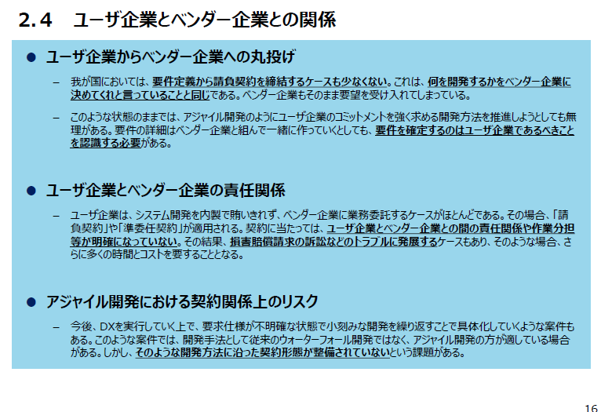
- ・ユーザ企業からベンダー企業への丸投げ
- –我が国においては、要件定義から請負契約を締結するケースも少なくない。これは、何を開発するかをベンダー企業に決めてくれと言っていることと同じである。ベンダー企業もそのまま要望を受け入れてしまっている。
- –このような状態のままでは、アジャイル開発のようにユーザ企業のコミットメントを強く求める開発方法を推進しようとしても無理がある。要件の詳細はベンダー企業と組んで一緒に作っていくとしても、要件を確定するのはユーザ企業であるべきことを認識する必要がある。
- ・ユーザ企業とベンダー企業の責任関係
- –ユーザ企業は、システム開発を内製で賄いきれず、ベンダー企業に業務委託するケースがほとんどである。その場合、「請負契約」や「準委任契約」が適用される。契約に当たっては、ユーザ企業とベンダー企業との間の責任関係や作業分担等が明確になっていない。その結果、損害賠償請求の訴訟などのトラブルに発展するケースもあり、そのような場合、さらに多くの時間とコストを要することとなる。
- ・アジャイル開発における契約関係上のリスク
- –今後、DXを実行していく上で、要求仕様が不明確な状態で小刻みな開発を繰り返すことで具体化していくような案件もある。このような案件では、開発手法として従来のウォーターフォール開発ではなく、アジャイル開発の方が適している場合がある。しかし、そのような開発方法に沿った契約形態が整備されていないという課題がある。
- 2.5 情報サービス産業の抱える課題
- 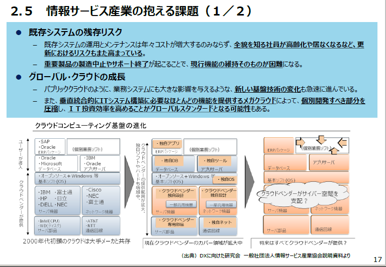
- 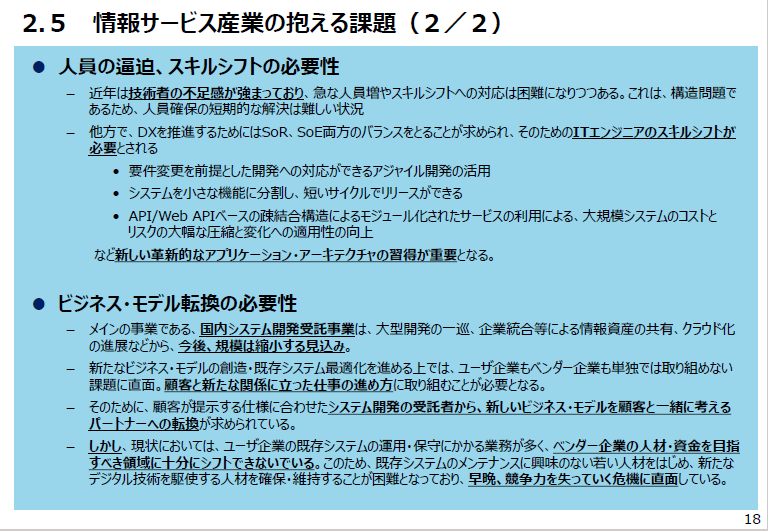
- ・既存システムの残存リスク
- –既存システムの運用とメンテナンスは年々コストが増大するのみならず、全貌を知る社員が高齢化や居なくなるなど、更新におけるリスクもまた高まっている。
- –重要製品の製造中止やサポート終了が起こることで、現行機能の維持そのものが困難になる。
- ・グローバル・クラウドの成長
- –パブリッククラウドのように、業務システムにも大きな影響を与えるような、新しい基盤技術の変化も急速に進んでいる。
- –また、垂直統合的にITシステム構築に必要なほとんどの機能を提供するメガクラウドによって、個別開発すべき部分を圧縮し、ＩＴ投資効率を高めることがグローバルスタンダードとなる可能性もある。
- ・人員の逼迫、スキルシフトの必要性
- –近年は技術者の不足感が強まっており、急な人員増やスキルシフトへの対応は困難になりつつある。これは、構造問題であるため、人員確保の短期的な解決は難しい状況
- –他方で、DXを推進するためにはSoR、SoE両方のバランスをとることが求められ、そのためのITエンジニアのスキルシフトが必要とされる
- •要件変更を前提とした開発への対応ができるアジャイル開発の活用
- •システムを小さな機能に分割し、短いサイクルでリリースができる
- •API/Web APIベースの疎結合構造によるモジュール化されたサービスの利用による、大規模システムのコストとリスクの大幅な圧縮と変化への適用性の向上
- など新しい革新的なアプリケーション・アーキテクチャの習得が重要となる。
- ・ビジネス・モデル転換の必要性
- –メインの事業である、国内システム開発受託事業は、大型開発の一巡、企業統合等による情報資産の共有、クラウド化の進展などから、今後、規模は縮小する見込み。
- –新たなビジネス・モデルの創造・既存システム最適化を進める上では、ユーザ企業もベンダー企業も単独では取り組めない課題に直面。顧客と新たな関係に立った仕事の進め方に取り組むことが必要となる。
- –そのために、顧客が提示する仕様に合わせたシステム開発の受託者から、新しいビジネス・モデルを顧客と一緒に考えるパートナーへの転換が求められている。
- –しかし、現状においては、ユーザ企業の既存システムの運用・保守にかかる業務が多く、ベンダー企業の人材・資金を目指すべき領域に十分にシフトできないでいる。このため、既存システムのメンテナンスに興味のない若い人材をはじめ、新たなデジタル技術を駆使する人材を確保・維持することが困難となっており、早晩、競争力を失っていく危機に直面している。
- 【参考】情報サービス産業の概況
- 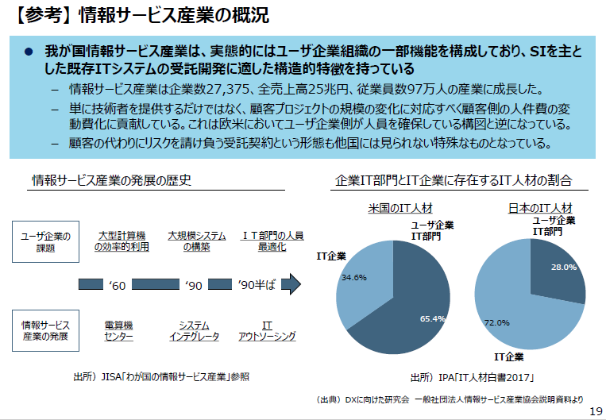
- ・我が国情報サービス産業は、実態的にはユーザ企業組織の一部機能を構成しており、SIを主とした既存ITシステムの受託開発に適した構造的特徴を持っている
- 情報サービス産業は企業数27,375、全売上高25兆円、従業員数97万人の産業に成長した。
- 単に技術者を提供するだけではなく、顧客プロジェクトの規模の変化に対応すべく顧客側の人件費の変動費化に貢献している。これは欧米においてユーザ企業側が人員を確保している構図と逆になっている。
- 顧客の代わりにリスクを請け負う受託契約という形態も他国には見られない特殊なものとなっている。
- 2.6 DXを推進しない場合の影響
- 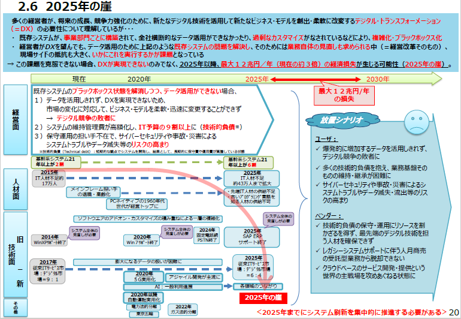
- 3. 対応策の検討
- 3.1 「DX推進システムガイドライン」の策定
- 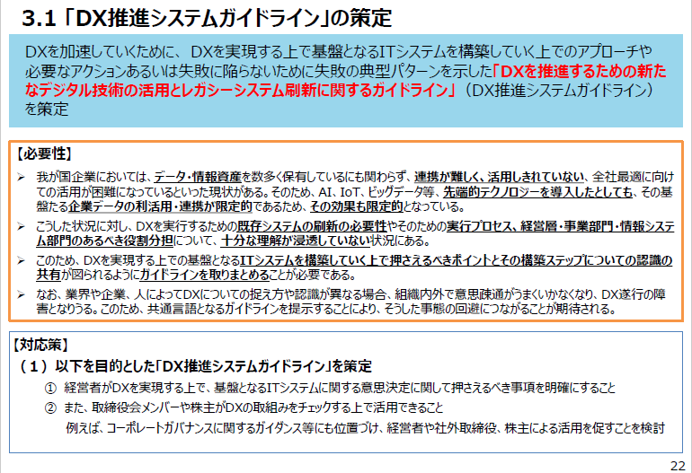
- DXを加速していくために、DXを実現する上で基盤となるITシステムを構築していく上でのアプローチや必要なアクションあるいは失敗に陥らないために失敗の典型パターンを示した「DXを推進するための新たなデジタル技術の活用とレガシーシステム刷新に関するガイドライン」（DX推進システムガイドライン）を策定
- 【必要性】
- ・我が国企業においては、データ・情報資産を数多く保有しているにも関わらず、連携が難しく、活用しきれていない、全社最適に向けての活用が困難になっているといった現状がある。そのため、AI、IoT、ビッグデータ等、先端的テクノロジーを導入したとしても、その基盤たる企業データの利活用・連携が限定的であるため、その効果も限定的となっている。
- ・こうした状況に対し、DXを実行するための既存システムの刷新の必要性やそのための実行プロセス、経営層・事業部門・情報システム部門のあるべき役割分担について、十分な理解が浸透していない状況にある。
- ・このため、DXを実現する上での基盤となるITシステムを構築していく上で押さえるべきポイントとその構築ステップについての認識の共有が図られるようにガイドラインを取りまとめることが必要である。
- ・なお、業界や企業、人によってDXについての捉え方や認識が異なる場合、組織内外で意思疎通がうまくいかなくなり、DX遂行の障害となりうる。このため、共通言語となるガイドラインを提示することにより、そうした事態の回避につながることが期待される。
- 【対応策】
- （１）以下を目的とした「DX推進システムガイドライン」を策定
- ①経営者がDXを実現する上で、基盤となるITシステムに関する意思決定に関して押さえるべき事項を明確にすること
- ②また、取締役会メンバーや株主がDXの取組みをチェックする上で活用できること
- 例えば、コーポレートガバナンスに関するガイダンス等にも位置づけ、経営者や社外取締役、株主による活用を促すことを検討
- 【参考】「DX推進システムガイドライン」の構成案

- ■経営戦略におけるDXの位置づけ：
- 《経営戦略におけるDXの位置づけ》
- 1.DXが、自社の経営戦略を実現するためのものとして位置づけられているか。
- 《経営戦略とDXの関係》
- 2.どの事業分野にどういった戦略でどのような新たな価値（新ビジネス創出、即時性、コスト削減など）を生み出すことを目指すか。そのために、どのビジネス・モデルをどのように変革すべきかについての経営戦略が明確になっているか。
- 3.どのようなデータを収集・活用し、どのようなデジタル技術を使って、何の仕組みを実現するのか。すなわち、DXの目指すべきものが明確になっているか。また、それが、経営層、事業部門、情報システム部門等の関係者に共有されているか。
- 《DXにより実現すべきもの：スピーディーな変化への対応力》
- 4.ビジネス・モデルの変革やそれに伴うシステム変更が、経営方針転換やグローバル展開等へのスピーディーな対応を可能とするものになっているか。
- （失敗ケース）戦略なき技術起点のPoCは疲弊と失敗のもと
- （失敗ケース）経営者が明確なビジョンがないのに、部下に丸投げして考えさせている（「AIを使って何かやれ」）
- （失敗ケース）レガシーで保守費用が上がると言われて、ビジネスの観点で困っていることが何か、あるべき姿が何かを考えずに刷新に踏み切る
- ■DX実現に向けた新たなデジタル技術の活用やレガシーシステム刷新のための適切な体制・仕組み：
- 《ITシステムの基本構想の検討体制》
- 5.DXの実行に際し、戦略的なデータ活用とそのためのITシステムの基本構想を検討するための体制（組織や役割分担）が整っているか。
- ⁻経営戦略を実現するために必要なデータとその活用、それに適したITシステムの全体設計を描ける体制・人材を確保できているか。
- ⁻業務に精通したITエンジニアを確保できているか。
- （先行事例）経営レベル、事業部門、情報システム部門（現行技術）、情報システム部門（新技術）から成る少人数のチームを組成し、トップダウンで変革に取り組む事例あり
- 《経営トップのコミットメント》
- 6.新たなデジタル技術の活用やシステムの刷新においては、その前提として、ビジネスや仕事の仕方そのものの変革へのコミットが不可欠であり、経営トップ自らがそのプロジェクトに強いコミットメントを持って取り組んでいるか。
- ⁻仮に社内に抵抗勢力がいる場合は、トップがリーダーシップを発揮し、意思決定することができているか。
- （失敗ケース）システム刷新には経営者のコミットが必要であり、情報システム部門にのみ任せることは失敗のもと
- 《新たなデジタル技術活用におけるマインドセット》
- 7.新たなデジタル技術の活用に際しては、経営戦略とそれを実現するためにDXが目指すべきものを踏まえて、以下のようなマインドセットで取り組むことが可能な環境や体制ができているか。
- ⁻仮説検証の繰返しプロセスが確立できているか：仮説を設定し、実行し、その結果に基づいて仮説を検証し、それに基づき新たに仮説を得る一連の繰返しプロセスが確立できていること
- ⁻仮説検証の繰返しプロセスをスピーディに実行できること
- ⁻実行して目的を満たすかどうか評価する仕組みとなっていること
- （失敗ケース）仮説を立てずに実行すること、失敗を恐れて何もしないこと
- 《事業部門のオーナーシップ》
- 8.事業部門がオーナーシップを持って、仕様決定、受入テストを実施する仕組みになっているか。また、事業部門と情報システム部門の間でコミュニケーションが十分にとれる仕組みとなっているか。
- ⁻業務や製品に問題の原因がある場合、業務や製品自体の見直しを行っているか。
- （失敗ケース）事業部門がオーナーシップを持たず、情報システム部門任せとなり、できたものが事業部門の満足できるものとならない
- （失敗ケース）ベンダー企業が情報システム部門としか話ができず、事業部門と話ができない
- ■DX実現に向けた新たなデジタル技術の活用やレガシーシステム刷新のための適切な体制・仕組み：
- 《ユーザ企業自らの選択・判断能力》
- 9.ユーザ企業は、複数のベンダー企業の提案を受けて、自身のビジネスに適した提案を自ら選択・判断できているか。（失敗ケース）これまで付き合いのあるベンダー企業からの提案を鵜呑みにしてしまう
- （失敗ケース）経営者がリスクを懸念して、大手ベンダー企業の提案であれば問題ないとの判断に傾いてしまい、CIO自身もそのような報告をする
- 《ユーザ企業自らの要件定義能力》
- 10.ユーザ企業とベンダー企業が責任分担を明確にしつつ、ユーザ企業は、企業として何をやりたいかを示しているか。
- ⁻要件の詳細はベンダー企業と組んで一緒に作っていくとしても、要件はユーザ企業が確定することになっているか（要件定義の丸投げはしない）
- （失敗ケース）要件定義を請負契約にすると、ベンダー企業に丸投げとなってしまう（ベンダー企業も要件定義を請負契約で受けることは慎み、準委任契約とすべき）
- （失敗ケース）現行システムの仕様が不明確であるにもかかわらず、現行機能保証という要望を提示する
- 《評価・ガバナンスの仕組み》
- 11.システムができたかどうかではなく、ビジネスがうまくいったかどうかで評価する仕組みとなっているか。その上で、ITシステムやその投資に対する経営の観点からのガバナンスが効く仕組みとなっているか。
- ■DX実現に向けた新たなデジタル技術の活用やレガシーシステム刷新のための実行プロセス：
- 《情報資産の分析・評価》
- 12.情報資産の現状を分析・評価できているか。《情報資産の仕分けと移行プランニング》
- 《情報資産の仕分けと移行プランニング》
- 13.どのデータをどのシステム、環境に移行するかの仕分けやプランニングができているか。
- ⁻例えば、以下の4つに分類できているか
- ①頻繁に変更が発生し、ビジネス・モデルの変化に活用すべき機能は、クラウド上で再構築
- ②変更されたり、新たに必要な機能は、クラウドへ追加
- ③肥大化したシステムの中に不要な機能があれば、廃棄
- ④今後、更新があまり発生しないと見込まれる機能は、その範囲を明らかにして、塩漬け
- ⁻ユーザ企業における非競争領域、すなわち協調領域には、標準パッケージの導入や業種ごとの共通プラットフォームの利用等、コスト削減や競争領域へのリソースの重点配分を図っているか。
- ⁻経営環境の変化に対応して、事業ポートフォリオの見直しや資産の入れ替えを柔軟に行っていくことが求められる中、ITシステムについても、廃棄すべきものはサンクコストとしてこれ以上コストをかけず、廃棄できているか。
- （先行事例）情報資産の現状を分析した結果、半分以上が業務上止めても問題ない利用されていないシステムであり、これらについては、廃棄する決断をした
- 《レガシー刷新後のシステム：変化への追従力》
- 14.レガシー刷新後のシステムには、新たなデジタル技術が導入され、ビジネス・モデルの変化に迅速に追従できるようになっているか。
- （失敗ケース）刷新後のシステムは継続してスピーディーに機能追加できるようなものにするとの明確な目的設定をせずに、レガシー刷新自体が自己目的化すると、DXにつながらないシステムができ上がってしまう（再レガシー化）
- （先行事例）ビジネス上頻繁に更新することが求められるものについては、マイクロサービス化によって細分化しながらアジャイル開発により刷新していくアプローチもある。これにより、リスクが軽減できる可能性もある。
- ⁻再レガシー化を回避するため、業務の簡略化や標準化を行い、システムのカスタマイズコストとそれを実施することによる経営のメリットのバランスを評価しているか。
- （失敗ケース）過剰なカスタマイズは、メンテナンスやバージョンアップ時のコスト増に
- （先行事例）システムのカスタマイズは、CEOの承認事項とした事例あり
- 《経営者自らによるプロジェクト管理》
- 15.経営者は、関係事業部門や情報システム部門とともに、プロジェクトを管理して、問題発生時には経営層が迅速に対応策の検討、意思決定を行っているか。
- 《DXの取組の継続》
- 16.DXの取組は、完了するものではなく、環境やビジネス・モデルの変化に合わせて、継続的に行われるものになっているか。
- 【参考】負債を解消し、デジタルトランスフォーメーションにつなげるためには
- 情報資産の現状を分析・評価し、仕分けを実施しながら、戦略的なシステム刷新を推進する
- 機能ごとに右の4象限（案）で評価し、今後のシステム再構築をプランニングする
- A:頻繁に変更が発生する機能はクラウド上で再構築
- B:変更されたり、新たに必要な機能は適宜クラウドへ追加
- C:肥大化したシステムの中に不要な機能があれば廃棄
- D:あまり更新が発生しない機能は塩漬け
- 3.2 「見える化」指標、診断スキームの構築
- ・システム刷新を含めたシステムの環境整備に取り組むことを目的に、ユーザ企業自身がITシステムの全体像を把握できるように、「見える化」指標と診断スキームを構築する
- 【必要性】
- ・DX推進に向けて、老朽化・複雑化・ブラックボックス化した既存システムの刷新に多くの企業が踏み出せていない現状がある。
- ・老朽化・複雑化・ブラックボックス化した既存システムを放置した場合、➀データを最大限活用できるようなDXが実現できず、また、➁将来にわたり運用・保守費が高騰して、➂維持・保守できる人材が枯渇し、セキュリティ上のリスクも高まる。
- ・しかし、こうした経営上の重要な問題点について、経営者が適切に認識できているとは言えない現状にある。情報システム部門が、問題を認識できているとしても、経営者に対して経営上の問題として説明するのが難しいとの指摘がある。
- ・このため、DXの足かせになっている既存システムのアセスメント（情報資産の「見える化」）は、経営者がシステム刷新を決断する上で重要である。また、ITシステムに対する経営の観点からのガバナンスがなされているかについても、明らかにする必要がある。
- 【対応策】
- （１）評価指標の策定
- ①次頁に示すような分類を想定した評価指標を策定する
- ②民間ベンダー企業等が評価を行うに先立って、簡易な形で統一的に情報資産を「見える化」する指標とする。
- ③経営のトップが経営上の課題として問題点を認識できるような指標とする。
- ④評価が低かった場合にどういったアクションをすべきかまで示唆するように設計。指標の策定に際しては、項目ごとに数段階のレベルを設定し、到達度合いに応じてレベル付けを行う。
- （２）指標を用いた中立的な立場での診断スキームの構築
- ①中立的な組織に人材を集めて、指標の検討や診断を実施する体制を構築する。また、多数の診断に対応する体制を構築する。
- ②ユーザ企業の情報システム部門やビジネス部門からの参画も促し、人材交流を通じた技術・スキルや業務知識の理解の向上にも資する場とする。
- （３）診断によるインセンティブ
- ①診断の結果、高評価を受けた企業を優良認定することを検討（「攻めのIT経営銘柄」との連動など）
- ②他社や業種内での自社の位置づけ等を経営者に示すツールとして利用できるように設計。
- 【参考】「見える化」指標のイメージ
- （１）ITシステムの現状
- ①技術的負債の対象と度合いを具体的に見える化
- ・資産・ライセンスの構成：サーバ構成やライセンス使用状況（どれくらい古いか）、運用保守費の年次推移により、旧技術利用やサポート切れのリスクなどを指標化。
- ・ソフトウェア品質とシステム運用の状況：システム改修の内容、頻度と規模、インシデント発生数と推移、ITコストの内訳、機能追加状況等により、機能向上への要求に対する対応可能性とシステムの稼働状況を指標化。
- ・管理形態・活用状況：仕様・ライブラリの管理方法、設計書等の更新状況、資産管理台帳の運用、等
- ②IT成熟度やデータの利活用
- ・企業におけるシステム・データの利活用：定型データがシステム連携できているか（企業内で部門や事業所間で横断的にデータ活用ができているか等）。任意のデータがAPIにより自由に利活用できているか。データ利活用に関するSE経費。
- ・ITシステム・IT投資の成熟度：オープン化やクラウド化がそのメリットを活かせる形で計画が策定されているか。十分に新規ビジネス領域にIT投資できているか。
- （２）経営戦略における位置づけ、体制・仕組みの状況
- ※「DX推進システムガイドライン」の各項目に従って評価
- （３）実行プロセスの状況
- ※「DX推進システムガイドライン」の各項目に従って評価
- 3.3 DX実現に向けたITシステム構築におけるコスト・リスク低減のための対応策
- ・ITシステムの刷新については、莫大なコストと時間がかかり、リスクも伴うものである。また、刷新後のシステムが再レガシー化してしまう恐れもある。このため、こうしたコストやリスクを抑制しつつ、ITシステムの刷新を実現する必要がある。
- 3.3.1刷新後のシステムが実現すべきゴールイメージの共有
- –レガシー刷新後のシステムは、新たなデジタル技術が導入され、ビジネス・モデルの変化に迅速に追従できるようになっている必要がある。
- –こうした、刷新後の目標設定については、経営者、事業部門、情報システム部門等プロジェクトに関わるすべてのステークホルダが認識を共有していることが重要である。（さもないと、刷新後も再レガシー化するおそれ）
- –その一助として、刷新後のシステムが実現すべきアーキテクチャを示す「DX参照アーキテクチャ」の策定についても検討する。
- 3.3.2廃棄することの重要性
- –コスト・リスクを低減する上で最も効果的な方法は、不要な機能を廃棄し、規模と複雑度の軽減を図ること。
- 3.3.3刷新におけるマイクロサービス等の活用
- –例えば、ビジネス上頻繁に更新することが求められる機能については、システム刷新における移行時において、マイクロサービス化することによって細分化し、アジャイル開発方法により段階的に刷新するアプローチも考えられる。これにより、仕様を明確にできるところから開発を進めることになるため、リスクの軽減も期待できる。
- 3.3.4協調領域における共通プラットフォームの構築
- –協調領域については、個社が別々にシステム開発するのではなく、業界毎や課題毎に共通のプラットフォームを構築することで早期かつ安価にシステム刷新することが可能である（割り勘効果）。
- 3.3.4 協調領域における共通プラットフォームの構築

- 協調領域については、個社が別々にシステム開発するのではなく、業界毎や課題毎に共通のプラットフォームを構築することで早期かつ安価にシステム刷新することが可能である（割り勘効果）。ニーズのある領域を見極め構築することを目指す。
- 【必要性】
- ・競争力に寄与しない非競争領域については、業界内外を含めて業務の共通化やシステムの共通化を図っていき、複数の企業が共同でシステムを構築することが、コストや失敗リスクを下げる有効な手段となり得る
- 【対応策】
- （１）協調領域の見極め
- 共通プラットフォームを構築し得る具体的な分野については今後検討が必要。例えば以下のような分野が指摘されている。
- ⁻業界の中で規制に対応するための標準的・規格的･共通的な作業が多く存在する規制業種の分野
- ⁻保安や環境の分野
- ⁻人手不足や環境、コストダウンという観点からも、非競争領域であり協調可能性が高いとの認識がある共同配送・物流の分野
- ⁻広告・宣伝・営業等の競争領域に続く、受注やコールセンター等、個々の注文を受ける部分
- ⁻人事・ロジスティクス・CRM等のERPの浸透度が低く、我が国における企業の生産性を落としている可能性のある分野
- （２）協調領域における業務の標準化や共通プラットフォームの検討の進め方
- –業界団体が共通化を進める旗振り役となって議論を進める方法
- –業界の大手企業が先行的に取り組んで行き関係する業界に伝播していく方法
- –業界における中堅クラスの企業が集まって共通化し、機能を充実しつつデファクト化させ、最終的に大企業にも波及させる
- （このような場合、中小企業は資金力に制約があることから何らかの支援が必要か）
- –処理量が増加するアプリケーションを想定して、クラウドの上で使いながらスケールアウトにより処理量の変化に迅速に対応可変とする方法
- –アジャイル開発を活用して、小規模な機能からユーザ企業に求められる機能を試用しながら、有効な機能やソフトウェアを探索的に作成し共通化機能として作り込む方法
- （３）共通プラットフォーム利用へのインセンティブ
- 各社の業務やシステムを変更する初期コストがかかることから、何らかのインセンティブを設定することが、導入を促す上で有効
- ⁻共通プラットフォームの活用を「見える化」指標を用いて評価する項目に位置付けることを検討
- ⁻各社や各事業部門の強い抵抗に対する政府のサポート
- （４）共通プラットフォームの構築・利用に当たってのポイント
- ⁻ユーザ企業側が責任をとることが本質的に重要。参画する事業者が当事者意識を持てるように、発注側の責任としての責任・役割分担を明記した契約内容を整備し、その記載内容にコミットして共同利用に参画する、というルール等を整備する必要があり、契約ガイドラインとして策定することを検討
- ⁻共通プラットフォームの構築・利用に当たっては、業務を変え、既存システムを捨てる覚悟が必要
- ※「DX推進システムガイドライン」の各項目に従って評価
- 3.4 ユーザ企業・ベンダー企業の目指すべき姿と双方の新たな関係
- 3.4.1 DXを通じてユーザ企業が目指すべき姿
- –ユーザ企業においては、既存システムの刷新が実行され、既存システム上のデータを活用した本格的なDXが可能になる。同時に、人材や資金等のリソース配分においても、既存システムの維持管理に投資されていたものを、新たなデジタル技術の活用による迅速なビジネス・モデル変革に充当することができるようになる。
- –この結果、あらゆる産業におけるユーザ企業は、デジタル技術を駆使する”デジタル企業”となっていく。
- 3.4.2 ベンダー企業の目指すべき姿
- –ユーザ企業がデジタル企業となっていく中で、常に進歩し続ける最前線のデジタル技術の分野で競争力を維持し続けることが重要になる。
- –ウォーターフォール型の開発も一部残るものの、ベンダー企業がリードすべき技術分野は、下記が考えられる。
- ①AI等を活用したクラウドベースのアジャイル開発によるアプリケーションの提供
- ②ユーザ企業が行うアジャイル開発に対するコンサルティング
- ③最先端技術の提供等
- –その上で、ベンダー企業においては、受託業務から脱却し、最先端技術活用の新規市場を開拓し、クラウドベースのアプリケーション提供型のビジネス・モデルに転換していくことが必要である。
- –この際、例えば、ユーザ企業と協働しつつプロダクトを開発し、そのプロダクト開発における資産・知財をベンダー企業が保有し、他の顧客にも販売していく、又は当該ユーザ企業を含めて利用料を対価としてサービス提供するといったビジネス・モデルについても検討していくことが必要と考えられる。
- –いずれにしても、ベンダー企業の目指すべき方向は各社の経営方針により様々であり、”ベンダー企業”というカテゴリに属さないものとなっていく企業も出てくるものと考えられる。
- 3.4.3 ユーザ企業とベンダー企業の新たな関係
- ・ユーザ企業、ベンダー企業がそれぞれその役割を変化させていく中で、ユーザ企業とベンダー企業の間で新たな関係を構築していく必要がある。契約面においても、必要な見直しを行う。
- 【対応策】
- （１）ユーザ企業とベンダー企業間における契約
- ①ウォーターフォール型の開発に関する契約
- ⁻既存のウォーターフォール型の開発に関するモデル契約は、既存システムの再構築を想定したものになっていないため見直しを行う必要がある。
- ②ユーザ企業におけるアジャイル開発に関する契約
- ⁻アジャイル開発を想定したシステム開発・運用に関するベンダー・ユーザの責任問題、モデル契約等を整理するガイドラインの策定が必要である。
- ・パターンA：内製モデル
- ・パターンB：基本/個別契約モデルについては、プロフィットシェアに対する規定を位置付けるほか、以下の点についての見直しを検討する。
- • スクラムチーム内のプロダクトオーナー・スクラムマスター等の構成員の権限・責任の明確化
- • バックログの組み方やイテレーションの回し方の明確化
- • プロダクトオーナーが役割を全うしない場合の対応方法の明確化
- ・パターンC：ジョイント・ベンチャーモデル
- ・技術研究組合の活用に関する検討
- 今までにないブレークスルーとなるようなものをユーザ企業とベンダー企業が協働して開発する場合や、レガシーを刷新する際に、マイクロサービスによって細分化しながらアジャイル開発方法を活用する方策をシミュレートする場合等、R&Dの要素が強い場合に活用できるのではないか。
- →具体的なケースを使って机上でシミュレーション、実証的に試行してみることが必要と考えられる。
- （２）トラブル後の対応：ADRの活用推進
- –裁判外紛争解決（ADR）の活用により、トラブル解決時間の短縮と、非公開性を確保することが期待される。
- –システム開発を進めるに先立ってトラブルが生じた場合はADRを活用する旨を事前に契約に盛り込むことを推奨しているが、モデル契約にこのような内容を盛り込む等、ADR活用の促進の検討が必要である。
- 【参考】アジャイル開発における主な契約モデルの特徴
- ①内製
- ②基本/個別契約
- ③ジョイントベンチャー
- ④技術研究組合
- ベンダーによる価値提供としては、以下のようなパターンも考えられる。
- コンサルティング契約：ユーザ側の活動に参画し、アジャイル開発に関するスキル向上を教え込むことを目的としたコンサルの提供
- サービス利用契約：アジャイル開発への従事時間ではなく、成果物（プロダクト）やそれを利用したサービスによる価値提供
- 【参考】アジャイル開発における契約パターン技術研究組合モデル
- ・「技術研究組合」は、産業活動において利用される技術に関する試験研究を共同して行うことを目的として、主務大臣の認可を受けて設立される。税制上の優遇措置が適用される上、組合員は有限責任（賦課金が賦課される）となる。
- ・アジャイル開発は、作成プロダクトの内容を事前に固めることはせず、トライアル・アンド・エラーを繰り返しながら開発を進めていくプロセスとなるため、試験研究の側面もある。このため、将来事業化を念頭におき、現時点では事業化できていないが、協同で取り組む研究課題が明確になっている等、各種要件を満たせば、組合として認可を受けることも可能。
- ①技術研究組合法に基づく大臣認可を受けることにより法人格を持った組合として設立。
- ②組合員企業は、組合に対して賦課金を拠出。（直接受発注する関係にある二者で設立することも可能。）
- ③組合は、受け取った賦課金により取得した試験研究用設備の取得額相当分を損金に算入することが可能（圧縮記帳※）。また、組合員企業自身についても、支払った賦課金額を試験研究費として損金算入できる上、賦課金額の20％分を法人税から控除可能※H33年３月末までの措置
- ④事業化する際には株式会社等へのスムーズな移行が可能。
- 3.5 DX人材の育成・確保3.6 ITシステム刷新の見通し明確化
- ・デジタル技術の進展の中で、DXを実行することのできる人材の育成と確保は各社にとって最重要事項である。ユーザ企業、ベンダー企業それぞれにおいて、求められる人材スキルを整理し、必要な対応策を講じていくことが必要。
- 【対応策】
- （１）ユーザ企業において求められる人材
- •CDO（Chief Digital Officer）：システム刷新をビジネス変革につなげて経営改革を牽引できるトップ人材
- •デジタルアーキテクト（仮称）：業務内容にも精通しつつITで何ができるかを理解し、経営改革をITシステムに落とし込んで実現できる人材
- •各事業部門においてビジネス変革で求める要件を明確にできる人材
- •ビジネス変革で求められる要件をもとに設計、開発できる人材
- •AIの活用等ができる人材、データサイエンティスト
- （２）ベンダー企業において求められる人材
- •受託開発への過度な依存から脱却し、自社の技術を活かして、アプリケーション提供型のビジネスの成長戦略を描き、実現できる人材
- •求められる要件の実現性を見極めた上で、新たな技術・手法を使った実装に落とし込める人材
- •ユーザー起点でデザイン思考を活用し、UX（ユーザーエクスペリエンス）を設計し、要求としてまとめあげる人材
- •スピーディーに変化する最新のデジタル技術を詳しく理解し、業務内容にも精通するITエンジニア
- （３）人材確保・育成に向けた対応策
- •アジャイル開発の実践そのものが、ユーザ企業の人材にあっては開発手法を学び、ベンダー企業の人材にあっては開発に従事しながら業務を知ることにつながり、ユーザ企業・ベンダー企業双方の人材育成にもなる。
- •新たに整備されたITエンジニアのスキル標準や情報処理技術者試験の活用により、上記のような求められるIT人材の能力の明確化や、学び直しによる人材育成が進められることを期待
- •大学を含めた産学連携で人材育成を進めることも有効である。企業にとっては、自社のプロジェクトを大学とともに取り組むことにより、AIやデータ活用のスキルを実践的に獲得できるとともに、大学にとっても企業の持つデータを活用できるため、研究ならびに教育の良い教材となる。
- 2018年度より、第四次産業革命スキル習得講座認定制度が運用されている。大学及び大学と連携した民間の講座も増えてきていることから、今後も産学の連携が促進されることが期待される。
- 3.6 DX実現シナリオ
- 4. 今後の検討の方向性
- 3.1「DX推進システムガイドライン」の策定
- 骨子の具体化を整理、秋頃に成案。その後も先行事例の充実等を検討
- →IT経営指標、コーポレートガバナンスに反映
- 3.2「見える化」指標、診断スキームの構築
- ①評価指標の策定
- 有識者との検討を進め、指標案の具体化。年度内目途で成案
- ②診断スキームの構築
- 2019年度以降の、中立的な診断スキームの構築に向けて、予算要求を実施するとともに、体制構築に向けてIPA等と調整
- 3.3DX実現に向けたITシステム構築におけるコスト・リスク低減のための対応策
- ①DX参照アーキテクチャの策定
- DX推進システムガイドラインや「見える化」指標の策定との整合性を図りながら、秋以降も有識者を交えて検討を進める
- ②協調領域における共通プラットフォームの構築
- 協調領域における共通プラットフォームの構築に向けて、保安・物流等をはじめ、各業界のニーズを引き続き精査し、関係業界と調整して詳細の検討を実施。必要に応じ、取組を促す仕掛けも検討
- 3.4ユーザ企業・ベンダー企業間の目指すべき姿と双方の新たな関係
- ①ウォーターフォール型の開発に関する契約
- 有識者との検討を進め、システム再構築等の観点を踏まえたモデル取引契約ガイドラインを改訂
- ②アジャイル開発に関する契約
- アジャイル開発の実践者や契約関連の有識者を交えた検討により、アジャイル開発のガイダンスとモデル取引契約ガイドラインを策定
- 3.5DX人材の育成・確保
- スキル標準や情報処理技術者試験の活用促進
- 第四次産業革命スキル習得講座認定制度等によるスキル転換の推進
- 3.6ITシステム刷新の見通し明確化
- ①ロードマップ
- 本研究会で示したロードマップを産業界やメディア等にも説明し、認識共有を進める
- ②社会インフラ関係業種への対応
- 政策的制度措置を視野に入れて、政府部内で秋以降も検討を進める
- ③国際ルールに照らしたクラウド標準の構築
- 政策的制度措置を視野に入れて、政府部内で秋以降も検討を進める
- DXレポート～ITシステム「2025年の崖」の克服とDXの本格的な展開～（本文）
- 目次
- 検討の背景と議論のスコープ
- DXの推進に関する現状と課題
- DXを実行する上での経営戦略における現状と課題
- 模索過程にある経営戦略
- 既存システムの現状と課題
- DXの足かせとなっている既存システム
- 既存システムの問題点
- 既存システムの問題点の背景
- 既存システムの問題の難解さ
- 既存システムの運用・保守に割かれてしまう資金・人材
- ユーザ企業における経営層・各部門・人材等の課題
- 経営層の危機意識とコミットにおける課題
- CIOや情報システム部門における課題
- 事業部門と情報システム部門の役割分担
- ユーザ企業におけるIT人材の不足
- ユーザ企業とベンダー企業との関係
- ユーザ企業からベンダー企業への丸投げ
- ユーザ企業とベンダー企業の責任関係
- アジャイル開発における契約関係上のリスク
- 情報サービス産業の抱える課題
- 情報サービス産業の概観
- グローバル・クラウドの成長
- ベンダー企業における人員の逼迫、スキルシフトの必要性
- ビジネス・モデルの転換の必要性
- DXを推進しない場合の影響
- 既存システムの残存リスク
- 既存ITシステムの崖（2025年の崖
- 対応策の検討
- 「DX推進システムガイドライン」の策定
- 「見える化」指標、診断スキームの構築
- DX実現に向けたITシステム構築におけるコスト・リスク低減のための対応策
- 刷新後のシステムが実現すべきゴールイメージの共有
- 廃棄することの重要性
- 刷新におけるマイクロサービス等の活用
- 協調領域における共通プラットフォームの構築
- ユーザ企業・ベンダー企業の目指すべき姿と双方の新たな関係
- DXを通じてユーザ企業が目指すべき姿
- ベンダー企業の目指すべき姿
- ユーザ企業とベンダー企業の新たな関係
- ユーザ企業とベンダー企業間における契約
- トラブル後の対応：ADRの活用促進
- DX人材の育成・確保
- ITシステム刷新の見通し明確化
- 今後の検討の方向性
- おわりに